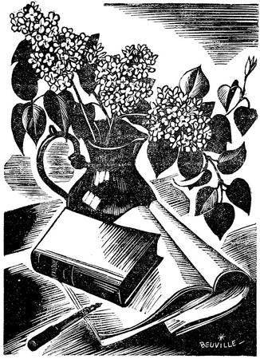
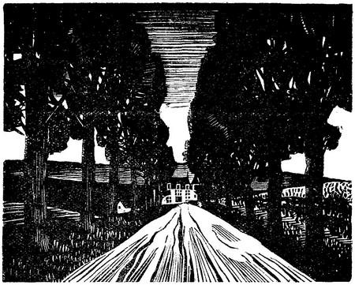
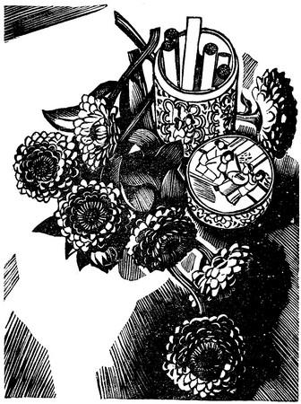
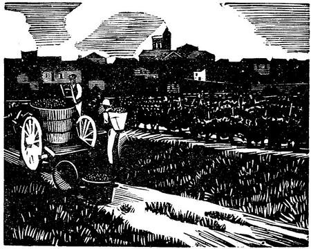
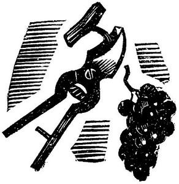
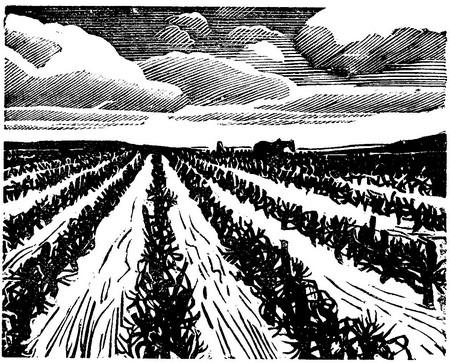
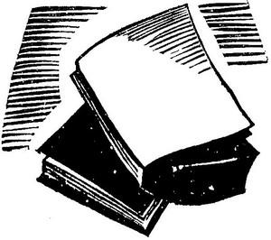

JEANNE GALZY
LES DÉMONS DE LA SOLITUDE
Bois de Georges BEUVILLE
LE LIVRE MODERNE ILLUSTRÉ
J. FERENCZI ET FILS, ÉDITEURS
9, rue Antoine-Chantin, Paris (14e)
—
MCMXXXVII
Copyright by les Éditions Rieder 1931


I
L’autobus sortit de la ville après avoir passé devant le bureau d’octroi poussiéreux et avoir franchi le trait sombre que dessinait sur la route le pont du chemin de fer. Les faubourgs s’ouvrirent.
Clarisse avait coutume de surveiller ce qui se passait dans ces maisons qui affectaient des coquetteries de villas derrière leurs grilles, minaudaient en formes de châteaux, se striaient de poutres visibles comme les fermes normandes. Il y avait un rideau derrière lequel se devinait depuis six ans le même visage : une femme desséchée et pâle qui éternellement brodait. À la dernière maison, la boucherie saignait. Puis, délivrées de ces laideurs, s’étendaient les vignes. Derrière de petits murs rocailleux, moutonnait leur étendue d’un vert sombre, soulevée au-dessus du sol réel, avec leurs lourdes feuilles robustes. De maigres bosquets de pins entouraient les mas. Quand on eut achevé la montée de la Croix d’Argent, Clarisse se pencha vers Éva qui studieusement avait tiré de sa serviette de cuir un de ses livres de classe et lisait.
— Regarde comme elle est pâle aujourd’hui !
Les deux jeunes filles levèrent alors du même mouvement leur visage. À travers les platanes qui bordaient la route, au fond de l’horizon la mer apparaissait. Ce n’était qu’une petite bande plate au-delà des terres blanchâtres de sables et d’herbages secs. Quelques taches sombres indiquaient les mas perdus au bord des dernières terres à vignes. Éva baissa de nouveau la tête. Ses yeux, qui avaient un instant paru aussi pâles que la mer lointaine, suivaient de nouveau les lignes du petit livre scolaire. Clarisse sentait contre son épaule l’épaule voisine que les cahots de la voiture heurtaient parfois contre la sienne. Sur ses genoux, la serviette chargée de livres pesait un peu. Elle y appuya ses mains gantées et ne parla plus. En face d’elle, des villageois, revenant de la ville avec leurs emplettes, disparaissaient à demi derrière leurs paquets volumineux. Des enfants s’efforçaient de se maintenir à genoux contre les fenêtres de l’autobus malgré les cahots. Les baies ouvertes apportaient l’air chaud de la campagne, terreux et comme desséché mais où parfois rôdait, en traînées capricieuses, l’humidité marine. Clarisse l’aspirait et ses narines petites et dures restaient immobiles. Visage sans palpitations, aux lourdes paupières fortement frangées de cils.
Dans ses moments d’expansion, Éva lui disait :
— Clarisse au petit visage de marbre !
Elle se sentait bien. Elle aimait l’été. Dans l’allée qui conduisait à la Bessière des cerises mûres brillaient. La double haie de rosiers du Bengale était encore en fleurs. Des palmiers, là-bas, contre les chaix, jetaient des gerbes de rayons et, malgré le bruit de l’autobus, elle entendait le cliquettement régulier de la noria que tournait un cheval pour monter l’eau dans les canaux d’arrosage.
— Tu n’as pas encore fini de lire !
Elle referma d’autorité le livre d’Éva.
— Tu m’ennuies, Clarie ! Laisse-moi travailler !
L’autobus s’arrêtait à Saint-Jean-de-Fos. Des villageois en descendirent entraînant avec des éclats de voix sonores les enfants excités par une journée passée à la ville. Il ne resta plus qu’une dizaine de voyageurs.
Éva se détacha de Clarisse, mit entre elles deux de l’espace.
— Ce que tu peux être empoisonnante avec ton examen !
— Moi, je n’ai pas un père qui me laisse faire tout ce que je veux et lire toute la nuit.
— Il t’embête donc bien ?
— Qui ?
— Ton père.
— Qu’est-ce que tu veux ! Il est médecin.
— Comme si ça rendait malade de veiller !
Elle souleva une épaule, regarda Éva avec compassion.
— Alors, il te surveille comme cela, tout le temps ? Il n’a pas autre chose à faire ? Et toi tu obéis ! C’est admirable !
— Que tu es sotte !
Éva, vexée, tentait de reprendre le livre fermé. L’autobus les secoua brusquement. Il virait près de la route de Sète. Un instant contre Clarisse, Éva fut projetée, puis reprit en riant son équilibre et ses dents parfaites luisaient comme des choses précieuses et saines.
Clarisse regardait de nouveau la route. Dans un bas-fond courait un maigre ruisseau. En face commençait la garrigue. Des bandes de vignes en rongeaient le pied, mais la colline pierreuse s’en dégageait vite, s’offrait nue au ciel. Au loin le pays s’incurvait, cerné de sèches ondulations que le pic de Mireval dominait de son pur dessin bleu.
Sans regarder Éva, Clarisse interrogea presque gravement :
— Alors, quand te reste-t-il le temps de vivre ?
La réponse ne vint pas. Les premières maisons de Fabrègues s’annonçaient par les abois des chiens. L’autobus prit brusquement sa droite. Une longue auto le dépassa à grande allure. Clarisse n’eut que le temps d’apercevoir une main gantée passée dans la lanière d’appui, la blancheur d’une robe.
Une faible rougeur envahit son petit visage dur. Ce fut Éva qui constata :
— Madame Fédière est de retour.
— Et puis ?
Déjà elle se dressait, presque arrogante, un peu sarcastique.
— Tu seras encore plus tranquille.
— Pourquoi ?
— Fais pas l’innocente. Tu me l’as déjà dit.
Elle soupira, presque rassurée.
— Oui, c’est la passion de papa.
— Tu crois que ?… reprit plus bas Éva.
— Non ! Je ne crois pas !
Elle avait nié très vite. La même fugitive rougeur fut sur son visage. Elle le sentit, fit effort pour se maîtriser.
— Tu ne flattes pas ton père, conclut Éva.
L’autobus stoppait. On descendait. Clarisse sauta d’un bond.
— Tu ne m’aides pas ?
Éva plus lente, embarrassée de sa serviette lourdement chargée, attendait son secours.
— Allons, viens ! Tu n’as qu’à ne pas t’encombrer autant !
Éva, abandonnée, descendit, courut quelques pas pour la rejoindre.
— Qu’est-ce que tu as ? Tu es d’une humeur ! C’est parce que tu as vu les amours de ton père ?
Clarisse dédaigna de répondre. Là-bas, au loin, une petite boule sombre était la voiture. Elle allait tourner vers Mujolan, se perdre sous les arbres. Elle disparut. Alors Clarisse offrit à Éva :
— Tu m’accompagnes ce soir ?
— Je suis trop chargée.
— Je te porterai ton bazar.
— Il fait trop chaud.
Son bras nu s’appuya au bras nu de sa camarade. Sa peau blanche malgré tant de soleil contrastait par sa mollesse comme transparente avec ce grain serré et dur du bras de Clarisse. Et tout d’un coup il devint nécessaire à Clarisse d’avoir encore un peu cette présence.
— Hier, il faisait encore plus chaud et tu es venue !
D’ordinaire, elles se raccompagnaient ainsi jusqu’à la bifurcation de la grande route et du chemin d’Agnac. Là, elles se séparaient. Éva revenait vers Fabrègues. Clarisse suivait le chemin à travers les vignes et de loin elles se disaient encore bonsoir ! se retournant l’une vers l’autre. Seuls les mois d’hiver faisaient cesser cette prolongation de leur intimité. Encore souvent se plaisaient-elles à regarder la pluie ou à écouter le vent, lorsque la voiture tardait qui venait chercher Clarisse à sa sortie de l’autobus – là-bas, à l’abri du hangar de la dernière maison du village.
— Aujourd’hui, j’ai trop de travail.
Les bras enlacés se séparèrent. Elles ne s’embrassèrent pas. Clarisse partit en sifflotant, Éva, plus lente. Au bout de vingt pas, elles se retournèrent l’une vers l’autre. Éva fit un petit signe de salut, mais Clarisse boudait. Elle déploya le bord relevé de son chapeau, en fit un abri contre le soleil, cala sa serviette sur ses reins, les deux bras rejetés en arrière, et s’échappa à longues foulées.
L’ombre lourde des platanes ne couvrait pas ce côté de la route où elle marchait, dédaigneuse de la chaleur. Un fossé encombré d’herbes grises cernait les vignes. Elle vit distraitement un groupe de travailleurs qui sulfataient, accepta sans le rendre leur salut. Là-bas, la route rejoignait Mujolan par un coude. À droite, entre deux piliers de pierre qu’unissait une chaîne de fer, s’ouvrait le chemin d’Agnac, et, du château, construit dans le bas-fond, n’apparaissaient que les tourelles crénelées entre des crêtes d’arbres durs.
« Un château pour étiquette de vins fins », avait-elle coutume de dire.
Il y avait encore au moins douze cents mètres par ce chemin rougeâtre où la terre affirmait ses qualités ferrugineuses, une terre qui donnait au vin ce goût de pierre à fusil, cette saveur spéciale qui en faisait le prix et qui l’écœurait. Elle marchait dans la grande paix des cinq heures de juin. Elle la fendait de sa hâte, à peine ralentie à présent qu’elle n’avait plus besoin de prouver à Éva qu’elle savait se passer d’elle. Madame Fédière était revenue ! Désormais elle verrait son père encore un peu plus absorbé que par son perpétuel souci du domaine. Il ferait quelques effets d’élégance. Il astiquerait ses ongles, et s’inonderait de parfum.
La main gantée dans la lanière d’appui, la robe blanche, l’auto qui vire l’angle de la grand’route…
Elle était déjà habillée de blanc. Les voiles de deuil qu’elle portait l’an passé étaient déjà abandonnés ! Au deuil des veuves tel qu’on le portait autour d’elle, Clarisse mesurait ce deuil rapide. Un an et demi ou presque deux ans ? Elle ne se souvenait plus exactement de quand datait ce soir où en s’asseyant à table son père avait dit, avec une étrange expression, à la vieille tante Sarah, qui n’interrompit son incessant bavardage que pour ressusciter toute la généalogie des Fédière : « Hippolyte Fédière est mort ! »
— Peut-être veut-il l’épouser ?
L’idée lui vint et la révolta. C’était la première fois qu’elle y pensait comme à une chose possible. Elle lui parut monstrueuse.
— Ah ! non, pas ça !
Une sorte de rage haineuse remua en elle. Elle envia ce père dont la volonté pouvait s’exercer sans entraves, qui pouvait ordonner, modifier sa vie. Elle se sentit emprisonnée dans sa jeunesse, esclave de ses dépendances.
Le château saillait en contre-bas, au milieu de ses arbres sombres, parmi les étendues de vignes. La grille de parc où elle voyait, sous une couronne de contrefaçon, les initiales de son arrière-grand-père, Numa Soubeyran, était toujours close, encombrée de feuillages. Elle contourna le mur que longeait le chemin d’exploitation. Dans la maison du jardinier, des enfants jouaient. La petite courut vers elle :
— Bonjour, Moiselle !
L’enfant, habituée à être accueillie, resta décontenancée un moment, puis revint jouer. Clarisse continuait à marcher de son pas égal.
— À cet âge, on ne sent pas la fatigue ! constatait toujours sa vieille tante avec envie, et elle se précipitait, autant que le lui permettaient ses pieds malades, au-devant de la jeune fille qui entrait.
— Eh ! adieu ma fille ! Tu es déjà là ! Tu n’as pas soif ? Tu n’as pas chaud ?
C’était l’Espagnolette qui parlait. De toute sa rondeur elle poussait la maigre vieille fille aux pieds gourds. Son visage gras et net luisait de tendresse.
— Non, nounou !
Clarisse passait. Son « Bonsoir, grand’tante ! » n’était qu’une apparence de politesse. Depuis qu’elle était entrée dans le grand vestibule sombre où les deux femmes attentives guettaient sa venue, elle ne pensait plus qu’à échapper au zèle infatigable de l’une, à la curiosité de l’autre. Les « Qui as-tu rencontré dans l’autobus ? » eussent été ce soir plus que jamais odieux, et plus que jamais aussi lui eussent été à charge cette enquête passionnée de sa nourrice, ces soins toujours en éveil.
— Je n’ai besoin de rien. Ne me dérange pas ! Elle traversa la salle à manger, ouvrit la porte. La chambre aux volets clos gardait une obscure fraîcheur. Elle jeta au hasard la serviette chargée de livres, ses gants, son chapeau, s’assit contre le lit, les jambes croisées, dans l’ombre.
Des raies de jour brillant découpaient aux fentes les volets de bois pleins, dessinaient le rectangle des deux fenêtres. Son corps ramassé jouissait de ce repos.
— Voyons, il ne pouvait épouser Sabine Fédière ! une femme si élégante, si lointaine, d’un autre milieu, oui d’un autre monde ! Elle se calmait, s’exhortait à se calmer. Sa jeunesse jugeait sans indulgence les cinquante-quatre ans de son père. Elle ne comprenait pas quel attrait eût pu posséder cette grande musculature robuste, cette force demeurée maigre, ces drus cheveux grisonnants, cette face tannée de soleil, ridée à grands plis. Elle n’y voyait que flétrissure, déchéance, vieillesse. Il était bon tout juste pour les quelques liaisons qu’elle lui avait à peu près connues, par racontars de domestiques. La couturière qu’il avait installée à Montpellier, et, avant elle, cette femme d’officier de marine qui venait à Fabrègues pendant les absences de son mari. Mais cet homme vieilli, acharné à agrandir son domaine, qui ne lisait jamais que des traités de culture, n’était abonné qu’aux revues vinicoles, indifférent à tout ce qui n’était pas sa terre, ses vignes, ses récoltes, son vin, pouvait-il plaire à Madame Fédière ?
À travers tant d’images rapides, elle essayait de la retrouver. Peut-être son visage était-il celui-ci qu’elle distinguait à cette minute si nettement, penché dans le demi-jour de la chambre, avec une pâleur avivée de rouge aux lèvres, d’ombre aux cils baissés ? Il avait une sorte d’indifférence douce et dédaigneuse. Les yeux étaient longs, le front un peu bombé et la bouche serrée sur le silence se relevait légèrement aux commissures : ébauche d’un sourire défait.
Puis elle la vit, comme l’été dernier, lorsqu’elle était venue à Agnac visiter les chaix nouvellement reconstruits. Elle était en grand deuil. Tout ce noir confisquait son corps, mystérieux, réduit. Mais le visage prenait une humanité plus déchirante. Toute sa vie semblait affluer à cette tache sanglante de la bouche, si violente qu’elle paraissait douloureuse, qu’elle causait la pâleur de la chair, le cerne des yeux et cette voix si singulièrement sombre où tous les mots avaient une vibration pathétique. Elle retrouva cette vibration, la laissa glisser le long de ses nerfs, puis, brusquement, se releva. La fraîcheur l’avait reposée. Elle étira ses longues jambes engourdies, fit jouer une crémone et le jardin durement feuillu envahit l’espace d’une fenêtre. Derrière les tilleuls aux feuilles déjà roussies, se mêlaient de sèches verdures : arbousiers et chênes-kermès, et plus haut, les pins criblaient l’azur de leurs mille aiguilles immobiles.
Elle chercha la serviette jetée à terre avec son poids de livres, en tira des cahiers. Elle redevenait élève à contre-cœur, avec dédain. Ce n’était pas Éva, qui désirait tant passer un baccalauréat brillant, qui aurait eu cette impression d’accomplir là une besogne puérile.
Elle devient stupide depuis qu’elle bouquine sa philosophie, conclut-elle. Elle n’était pas comme cela, autrefois, quand j’avais peine à l’empêcher de me reconduire tous les soirs jusqu’ici !
Elle se pencha sur les livres scolaires et s’irrita d’y perdre son temps. Qu’importait à la vie ce chapitre de logique, cet examen des principes premiers de la connaissance ? Pourtant elle travaillait, contractée dans son application.
Lentement, lentement, le ciel se mettait à pâlir, la chaleur fondait. L’indiscernable humidité marine vint par souffles. Des pas d’ouvriers rentrant des vignes firent sonner les pierres du chemin. Encore une page et la leçon serait apprise. Enfin elle étendit les bras, repoussa le livre inutile, fut debout, s’étira sur la pointe des pieds, sembla prête à danser et brusquement s’assit à terre, alluma une cigarette et fuma. Et elle laissait négligemment tomber les cendres, n’écrasant du bout de son doigt que celles qui demeuraient rouges et pouvaient brûler.
Comme tous les soirs, Mademoiselle Sarah priait :
« Seigneur, bénis la nourriture que nous allons prendre… » Clarisse n’écoutait jamais plus loin et était obligée de faire effort pour retrouver la fin de la prière :
« … et fais qu’elle répare nos forces afin de te mieux servir ! » Lucien Soubeyran s’asseyait seulement alors, entraîné dès l’enfance à respecter cet usage et ayant entendu ces paroles dites par sa mère avant de les recevoir de la bouche desséchée de sa tante Sarah.
Alors, Mlle Soubeyran, en accord avec Dieu, entamait son potage.
La nourrice servait, ceinturée d’un tablier blanc. Sa rondeur joyeuse courait de la cuisine à la salle à manger, et, malgré les avis de Mlle Sarah qui tenait aux usages, souvent elle se mêlait à la conversation.
— Qu’as-tu, ma belle ? Tu ne manges pas ce soir ?
Déjà tante Sarah énumérait les manques d’appétit dont elle avait souffert dans sa jeunesse.
— Vois-tu, c’est comme moi. À dix-huit ans, je ne pouvais avaler que de la salade. Je me nourrissais de laitues et de tomates crues. Ma pauvre mère s’en inquiétait, mais le docteur Mandon…
Clarisse n’écoutait plus, détachée de cette pièce sombre, meublée de meubles lourds et vieux de soixante-dix ans, de sa vieille tante, de la nourrice, les yeux sévèrement rivés sur son père.
Soubeyran mangeait solidement. Ses dents saines donnaient à certains mouvements de sa bouche un air de jeunesse. La chemise au col mou laissait voir le jeu sec des muscles, la peau brûlée. Il buvait à petits coups et chaque fois la pomme d’Adam saillait.
— Cela se pouvait-il ?… – Non, cela ne se pouvait pas ! Ses mains sombres de peau, légèrement duvetées sur le dessus, reposaient sur la nappe blanche. Clarisse en révisait toutes les lignes, en vit les durillons au contact des outils : des mains que ne rebutait aucun travail, qui caressaient les ceps, auscultaient les futailles, palpaient la terre.
Il parlait peu, la pensée tendue peut-être comme tous les soirs vers les tâches du lendemain. Clarisse cherchait en vain sur ce visage le reflet d’une joie. Savait-il que Mme Fédière était revenue ? Il leva les yeux vers elle :
— Eh bien, les études ?
— Ça va.
— Pas trop chaud au lycée ?
— Non.
Il avait épuisé les phrases de sa sollicitude ou plutôt, maladroitement, ne savait plus qu’ajouter.
— Qui as-tu rencontré dans l’autobus ? put enfin placer la vieille tante.
— Moi-même ! répondit insolemment Clarisse. Puis elle eut une inspiration subite, leva son beau regard sur son père et ajouta :
— Et la dame de Mujolan.
Il ne bougea pas, comme s’il n’avait pas entendu. La vieille fille s’étonna :
— Dans l’autobus ? Tu veux rire !
— Elle est bien trop chic pour ça. Rassure-toi. Elle était en voiture sur la route.
— Elle est donc déjà revenue de Paris ! Elle vient surveiller ses terres. Ah ! Hippolyte Fédière est mort trop tôt. Une femme comme elle doit se laisser tant voler ! Avec les régisseurs qu’on trouve aujourd’hui ! Qui sait si elle pourra continuer son train : huit mois à Paris, ici quatre. Avec ce luxe ! Et dans cette grande maison, sans enfant, elle doit se trouver bien seule !
Avec volubilité, la grand’tante parlait. Soubeyran venait d’allumer une cigarette. Les fruits étaient encore sur la table. Clarisse regardait toujours son père. Il dit entre deux bouffées.
— Ici aussi, la maison est trop grande pour nous.
— Oui, mais quand la petite se mariera…
Soubeyran regarda sa fille, eut un rapide, affectueux sourire. Clarisse déjà se cabrait :
— Je me marierai si je veux ! et elle tendit la main vers le paquet de cigarettes.
— Elles sont trop fortes pour toi, fit remarquer Soubeyran.
— Ça ne fait rien !
Et elle fumait à présent. Jamais Mlle Sarah n’avait pu s’habituer à ce geste.
— Comme on élève les jeunes filles aujourd’hui ! gémissait-elle chaque fois. Mais ce soir-là, elle ne parut pas s’en apercevoir, trop occupée de ce qui touchait Mujolan.
— Un si beau domaine ! Il va aller mal avec une femme, et une femme comme celle-là ! Elle ne doit rien savoir de rien, ni donner un ordre, ni parler à un travailleur, ni même, avec ses élégances, aller inspecter une vigne. Peut-être voudra-t-elle se défaire des terres. Ne sais-tu pas ?
— Je n’en sais rien.
« Il ne sait pas, se disait Clarisse. Elle ne lui parle pas de ses projets et on raconte qu’ils sont du dernier bien ! »
— Puis, peut-être aussi, belle comme elle l’est encore, elle se remariera.
Cette fois Soubeyran eut un léger mouvement. Il redressa la tête. Ses sourcils broussailleux se joignirent et il renvoya brusqueraient la fumée sans en calculer la route. Elle nimba la vieille fille sèche, s’agrippa au chignon posé un peu de travers entre les demi-bandeaux gris.
— Touché ! constata Clarisse.
Soubeyran se levait :
Il effleura d’un baiser les joues flétries, s’approcha de Clarisse. L’adolescente s’était dressée. Le petit visage hermétique était un peu pâle. Elle dit, la voix étranglée, ne sachant pas encore feindre :
— Tu savais qu’elle était de retour ?
— Qui ? demanda Soubeyran. Et cette fois il avait toute sa supériorité d’homme averti sur l’enfant ignorante.
— Madame Fédière.
— J’avais vu de loin sa voiture, dit-il très naturellement.
Il baisait ce visage pur levé vers lui.
— Dors bien, petite !
Clarisse sentait cette odeur qui avait toujours accompagné sa vie : relents de tabac et de vin, chair saine et moite, senteur forte d’homme et elle y distinguait le parfum nouveau de l’eau de Cologne prodiguée.
— Tu t’es joliment parfumé aujourd’hui papa !
Il ne répondit rien, embrassa encore la joue lisse et dure, redit un bonsoir qui s’adressait à la vieille parente. Ses épaules larges, sa grande silhouette disparurent. Tante Sarah commençait à rentrer dans le buffet les pâtisseries « qui n’étaient point pour la cuisine ». Sa robe noire avait un col blanc et du blanc aux poignets. C’était sa seule coquetterie, ce blanc implacable d’où ressortaient plus terne le visage et plus brunes les mains noueuses. Sur le parquet ses pieds malades chaussés de pantoufles trop larges traînaient en clapotements étouffés.
— Bonsoir, grand’tante !
Clarisse détestait ce baiser du soir, cette formalité familiale aussi inéluctable que les lois qui dans la nuit faisaient se lever les étoiles. Comme elle passait près de la fenêtre elle entendit le coassement des grenouilles dont le chant nostalgique emplissait le ciel.
Elle s’arrêta, un moment silencieuse, puis se retourna :
— Alors, ça t’amuserait, toi, que papa se remarie ?
— Qu’est-ce qui te prend ?
— Ça t’amuserait qu’il épouse la dame de Mujolan ?
Elle craignit soudain d’en avoir trop dit, car la vieille voix s’étonnait encore.
— Quelle idée as-tu, ma petite !
Elle n’écoutait plus que sa colère soudaine, bondit vers la porte, la referma avec fracas. Et la vieille femme interdite entendait ce jeune pas décroître avec hâte le long du vestibule, puis, là-bas, faire crisser violemment le gravier, puis se perdre, comme si maintenant le chant des grenouilles s’était refermé sur son bruit.
Soubeyran longea le couloir, rentra un instant dans sa chambre : le temps de chercher les comptes du jardinier, puis il redescendit les quelques marches qui surélevaient les appartements au-dessus du jardin. Il fumait toujours. Dans la maison du jardinier, il vit de la lumière à la chambre d’en haut : la femme devait coucher les enfants.
L’air du soir mêlé d’un frisson de vent marin rabattit sur lui la fumée de son tabac, l’empêcha de sentir le souffle de la roseraie où les rosiers fleurissaient avec une prodigalité sauvage. Il traversa la grande cour des communs, prit l’escalier d’où l’on accédait sous les toits, dans ces vastes pièces abandonnées qui, sous l’aïeul Numa, avaient servi aux comptables. À gauche, des bâtiments inoccupés depuis soixante ans offraient un silence confus, coupé de légers bruits. Des bêtes mystérieuses hantaient les trois étages réservés autrefois aux ouvriers agricoles, au berger et à sa famille, aux garçons d’écurie, au forgeron. Des souris peut-être ou des mulots des champs, et parfois des vols mous indiquaient que, par une cassure des vitres, une chauve-souris était entrée.
Soubeyran montait dans l’ombre. À droite il marcha le long d’un couloir vaguement éclairé de fenêtres, atteignit la rotonde de la tour de l’est, alluma son briquet, trouva la lampe. Des étagères chargées de dossiers et de registres garnissaient les murs peints à la chaux. Une grande carte figurait le domaine. Un bureau ministériel d’un luxe pesant occupait l’espace circulaire : c’était le bureau de Numa Soubeyran qui avait érigé Agnac sous le Second Empire, et ce meuble, sauvé des ventes et des catastrophes, servait encore au petit-fils. Il s’assit et commença à compulser les comptes écrits d’une écriture enfantine avec de gros chiffres maladroits et mal alignés.
— Sapte y va un peu fort ! pensa-t-il.
Ce jardinier, qui ne cultivait presque aucune fleur, était employé au potager et, par intermittence, aux vignes. Ses cultures maraîchères lui donnaient des occasions de rapine.
— Si je le changeais, trouverais-je mieux ?
Il pensa aussi :
— La femme aide aux lessives. Ma tante y est habituée. Ne faisons pas une révolution. Clarisse s’amusait beaucoup de la petite fille…
Il vit un instant sa fille jouant avec la petite aux joues roses, aux cheveux raides, charmante de ses quatre ans.
— Comme elle devient étrange et nerveuse ! Peut-être faudrait-il la marier bientôt ? Oui, mais avec qui ?
Il fit une rapide révision des domaines attenant à Agnac, les vit petits, indignes.
Enfin, s’il y avait là un garçon capable d’activité…
Deux ou trois fils de propriétaires passèrent dans son esprit. Il songeait au dessin des terres, aux ténements, à la qualité des cépages.
« Peut-être Chauvin, non, plutôt Bassaget… » Les garçons lui paraissaient, si semblables l’un à l’autre, médiocres élèves au lycée, bacheliers à force de recommandations, uniquement occupés d’autos et de femmes pour l’heure, mais aptes à s’intéresser aux cours des vins, aux récoltes, ayant la vigne dans le sang. Clarisse choisirait.
Debout, il regardait la grande carte contre le mur. Les tracés dataient de 1860. Des teintes différentes distinguaient les terrains qui avaient constitué le domaine. Au centre le plan du château et des communs. Le parc et la roseraient figuraient en vert, séparés l’un de l’autre par le chemin d’exploitation. Le terroir d’Agnac proprement dit était rose, celui des Trois-Pillards olive, le Lac bleu, Malbosc violet, La Pinède jaune, et deux ténements l’un orange, l’autre mauve, étaient striés de noir comme sur les cartes d’après 70 l’Alsace et la Lorraine annexées. C’étaient ceux que Soubeyran n’avait pu encore rejoindre au Domaine : le Vignal, acquis par les Fédière au moment du phylloxera lors de la ruine de son père, et Vignogoul, que les Rouquairolles, devenus possesseurs d’Agnac, avaient cédé pendant la mévente lors de leurs grands embarras financiers.
— Si Madame Fédière se défaisait de Mujolan, peut-être il pourrait racheter… Il n’acheva pas. Sa convoitise de la terre fondit. Il eut la seule sensation d’un vide : Mujolan habité par d’autres, Sabine perdue, sa vie rendue à sa solitude sans ce renouveau qu’était sa curiosité passionnée d’elle.
Et cette petite Clarisse qui l’avait si étrangement interrogé ce soir : qu’avait-elle deviné de lui ?
Il ne comprit pas, mais retrouva cette sorte de malaise qu’à présent lui causait sa fille comme si peu à peu en elle naissait une étrangère, comme si elle participait elle aussi à cet inquiétant mystère où semblait vivre Sabine Fédière. Y avait-il des êtres aussi difficiles à pénétrer ?
Jamais il ne se l’était demandé. Tout avait été si simple ! son enfance sans amitié, sans autre rêve que celui du Domaine perdu dont si souvent, dans leur étroite maison du village, s’entretenaient les siens, comme si pour son père et sa tante rien n’existait que le passé ; puis sa jeunesse de travail où l’amour n’avait eu que d’insignifiants visages, lorsque petit courtier en vins il avait réussi à monter une fabrique de tartres et gagné là ce peu d’argent qui lui avait permis d’être agréé pour gendre par les Rouquairolles, à leur tour à demi ruinés. Tout avait été effort, lutte contre les choses. Pendant les années difficiles, les Rouquairolles avaient laissé Agnac à l’abandon. Les terres n’étaient plus travaillées. Des hypothèques pesaient sur le château. Puis, sur tous ces soucis était venue la guerre. Où aurait-il pris le temps de se pencher sur cette pâle Hélène, restée si languissante depuis la naissance de Clarisse, et de se demander : « Que pense cette éternelle malade ? »
Et d’ailleurs, qu’y avait-il en elle ? Les lettres qu’elle lui envoyait à Grenoble, où il avait été mobilisé dans une usine, étaient aussi précises que les feuilles de température que chaque semaine elle y joignait.
Des êtres sans complications, avec lesquels on pouvait vivre. Des êtres sans imprévu et dont on pouvait disposer.
Après la mort du vieux Rouquairolles, il savait qu’il n’aurait qu’à dire à son père déjà atteint de paralysie : – « Père, il faudrait que vous vinssiez donner des ordres au château » pour que le vieillard répondit : « Tu veux dire que pour un Soubeyran il vaudrait mieux aller mourir dans son domaine » et qu’à faire observer à sa tante : « Hélène est fatiguée de tout. On ne peut plus la laisser seule. Il faudrait tenir la maison » pour que, malgré ses répugnances, la vieille fille répondit : « C’est bon. Tu peux compter sur moi. »
Des êtres qu’il connaissait bien, usés à force d’être usuels, rassurants, sans surprises. Avec lesquels il savait le poids exact de ses paroles, et qui disaient aussi les paroles attendues et justes, et qui n’avaient jamais ce silence déconcertant de Sabine, ces sautes d’humeur de Clarisse.
« Ainsi, aujourd’hui, à ce repas… » Les comptes du jardinier attendaient. Il y avait aussi à dépouiller cette correspondance échangée pour la vente du vin qui restait encore. Les cours baissaient toujours au moment des vendanges. Il était probablement sage de hâter les négociations. Puis cela permettrait d’examiner l’état des cuves, d’en refaire encore une ou deux peut-être.
Il songea aux dettes qui pesaient sur le domaine, au passif des Rouquairolles dont à la mort de sa femme il avait hérité et que son désir de reconstituer les bâtiments d’exploitation et d’agrandir ses terres de tous les ténements d’autrefois l’avait empêché d’éteindre, malgré les hauts cours des vins et quelques belles années. Mais des cépages trop vieux rendaient peu à présent. Il faudrait se décider à replanter, perdre pendant six ans plus d’un cinquième de la récolte. Le pouvait-il ?
Il alluma une cigarette. La grande maison devait s’endormir. « Si le petit Numa avait vécu… » Cette idée lui vint en pensant à reconstituer peu à peu les vignobles. Il revit cette petite chose rougeâtre, comme un pauvre petit animal écorché, l’enfant venu avant terme et qui n’avait pas vécu. Il revit l’air de désordre et de catastrophe de la chambre de l’ouest où devait dormir Clarisse, les bassins d’eau chaude, les linges sanglants. Il refoula l’afflux de ses pensées, s’arc-bouta comme pour leur fermer la porte et empêcher que passât à leur suite l’image de cette morte.
Et comme il s’était levé, il se pencha à l’une des petites croisées de la rotonde.
Le jardin en bas était noir, la nuit bleue. Il regarda cette part du ciel qui semblait lui appartenir puisque des Trois Pillards à Malbosc, de la Pinède au Lac, il reposait sur la terre qui était à lui.
L’air frais de la nuit baignait son visage. Il sentit un moment la fraîcheur marine où dans la chaleur du jour Clarisse avait cherché un apaisement. Sur la campagne silencieuse vibrait toujours le chant des grenouilles et ces indistinctes rumeurs des insectes nocturnes.
— Qui fume si tard dans le jardin ? se dit-il.
Une étincelle trouait la nuit des feuillages. Elle se mouvait lentement dans un va-et-vient régulier. Il pensa à un domestique, s’étonna qu’on osât disposer de cette partie de son domaine réservée aux maîtres : cet enchevêtrement d’arbres secs dont les fourrés mal élagués et coupés d’allées peu entretenues formaient le Parc.
— Pourvu que cet imbécile ne mette pas le feu aux brindilles !
La cigarette allumée se rapprochait. Sa flamme resta un moment immobile derrière l’if qui fermait l’avancée du parc. Puis une robe claire flotta sous les tilleuls. Clarisse traversa rapidement le terre-plein où le bassin arrondissait son ombre. D’un geste exact elle y jeta le bout de cigarette enflammée, fit craquer le gravier sous ses pas, s’appuya un instant à la porte d’entrée, étonnée de la trouver close.
D’en haut Soubeyran allait lui crier : « Attends ! Je viens ouvrir ! » Il n’en eut pas le temps. Elle était déjà montée sur la rampe de pierre du perron, presque à niveau d’une fenêtre restée ouverte. Le jeune corps fit un saut léger pour quitter la balustrade et bondir sur l’embrasure. Elle était rentrée.
Soubeyran s’était dit : « Je ne lui parlerai pas de sa promenade nocturne. Ce n’est pas la peine de l’irriter, surtout en ce moment si près de son baccalauréat. Et puis, que risque-t-elle dans les bornes du jardin ? Ni chemineau, ni maraudeur. C’est assez loin de la grand’route. »
Mais le lendemain, quand il la vit entrer dans la salle à manger avec son visage éclatant et lever sur lui son regard net qui l’examinait sans indulgence, il dit :
— Clarisse, il faudrait tout de même devenir une jeune fille, cesser d’être ce garçon manqué qui fume la nuit dans le parc et rentre par une fenêtre.
Elle l’interrompit avec feu :
— Tu me surveilles donc ? Qu’est-ce que cela peut bien te faire que je me promène quand il fait chaud ? J’aime la nuit. J’aime être seule dehors !
— Tu mettras le feu au parc.
— Qu’est-ce que vous dites ? interrogea Mlle Sarah qui entrait.
— Papa a peur que je fasse flamber le château !
Clarisse s’était déjà levée, ayant bu d’un seul trait son café au lait.
— Au revoir, grand’tante ! Au revoir, Pa !
Elle brusquait ses adieux, s’attendant aux indignations sans fin de sa vieille tante.
— Veux-tu que je t’accompagne en voiture ? cria Soubeyran alors qu’elle s’était déjà éloignée. Il se pencha à la fenêtre pour l’apercevoir et la cherchait du regard sur la route. Mais elle n’était qu’au bas du perron et se gantait avec lenteur.
— Je ne vais pas du côté de Mujolan ! répondit-elle avec ironie de sa voix pure.
Soubeyran revint à table achever de déjeuner.
— Que s’est-il donc passé ?
Il souleva ses fortes épaules.
— Rien, rien.
— Mais encore ?
La vieille femme ne lui laissait aucun répit. Ses récriminations emplissaient la petite salle à manger de l’ouest où, désertant la grande salle à manger d’apparat, la vie de famille s’était retirée depuis les derniers deuils.
— Elle me parle à peine comme à une domestique ! Hier soir encore elle est partie en claquant la porte ! Si c’est ce qu’on lui apprend au lycée ! Et ses manières de garçon !
— C’était précisément ce que je lui reprochais…
— Pourquoi les as-tu autorisées dès le début ? Si tu avais été plus sévère…
— Mais elle n’est pas la seule ainsi. Aujourd’hui les jeunes filles ont des besoins d’indépendance. On ne peut pas aller contre son temps…
— Éva Barrandon est bien de son temps, et vois comme elle est bien élevée, convenable, douce.
— Que voulez-vous, ma tante, une enfant qui n’a pas eu sa mère !
— Et moi ! alors, je n’ai servi à rien !
Elle se tut un instant, puis prononça :
— Vois-tu, c’est une Rouquairolles. Elle aura tout des Rouquairolles. Pas de la pauvre Hélène, par malheur, mais du vieux, qui avait un sang de feu.
— Pourtant, elle est de notre côté autant qu’on peut l’être. Elle est tout le portrait de ma mère.
— Pour la figure seulement. Mais l’intérieur est Rouquairolles. Enfin, laisse-la faire. Plus tard, tu verras.
— Je ne verrai rien. Je la marierai. Elle se calmera…
Il roulait une cigarette dans ses doigts puissants. Mlle Sarah essuyait de son geste précautionneux ses lèvres minces. Le déjeuner du matin était terminé. Protégée du levant, la salle à manger était encore pleine de fraîcheur nocturne, bien que toute la campagne fût déjà dévorée de soleil.
— Je vais aller avec Sapte à Malbosc.
— Vous aurez chaud.
— Il faut que j’examine avec lui…
Il expliquait, mais Mlle Sarah l’écoutait à peine. Les vignes ne l’intéressaient pas. Son royaume était la maison. Elle tenait les clés, commandait aux domestiques. L’Espagnolette seule ne la craignait point, forte de sa position privilégiée d’ancienne nourrice de Clarisse ; mais auprès de la cuisinière, de la femme de service et de la femme du payre, elle représentait l’autorité.
— Je vais aller voir la sortie des raisins. Sapte dit qu’à Malbosc on pourrait peut-être réserver des souches, que mon beau-père avait en partie replanté…
Mais dès le couloir il songeait :
« Pourquoi m’a-t-elle ainsi parlé de Mujolan ? »
Il descendit le perron, mesura l’espace qui en séparait la balustrade du rebord de la fenêtre, pensa : « Si elle avait mal calculé le saut ! », se promit de veiller à ce que restât ouverte la porte sur le jardin.
— Après tout, il doit déjà faire bien chaud dans les classes et au réfectoire. Et dans l’autobus avec ces voyageurs entassés. Cela peut lui être bon d’aller respirer. J’ai bien fait de ne rien dire à ma tante…
Sapte attendait devant la grille.
— Je viens dans une minute !
Il rentrait dans la maison.
La salle de billard était fermée, mais le grand salon restait ouvert : Clarisse tenait à pouvoir le traverser pour avoir à sa chambre une double issue, n’être pas forcée de toujours passer par la salle à manger. Soubeyran entra dans la grande pièce, à demi dévastée semblait-il parce que les Rouquairolles n’avaient pas eu les moyens d’en entretenir l’ancien faste. Il poussa la porte de la chambre.
Elle avait son désordre du matin, un désordre tel qu’il le remarqua bien qu’il fût surtout attentif aux livres laissés sur la table, aux devoirs commencés, à cette version latine aux mots barrés, à ces boules de papier jetées au hasard.
— Elle travaille tout de même !
Les gros dictionnaires étaient par terre, équilibrés contre un pied de la table, tout droit pour qu’ils fussent mieux à portée. Mais un coupe-papier traînait à côté d’un livre neuf. Soubeyran lut le titre, Albertine disparue, parcourut quelques lignes, n’y comprit rien.
— C’est drôle qu’elle s’amuse à ça ! »
Il releva la chaise qu’il avait heurtée, fut embarrassé de reconnaître qu’elle supportait un pyjama, se dit encore :
— Comment comprendre ? comment diriger ? et calcula : onze heures passées : promenade. Puis travail, puis lecture… Quand dort-elle ?
Il faillit confisquer le roman, n’osa pas :
« Si elle savait que j’ai voulu la surveiller ? D’ailleurs en quoi puis-je la surveiller ? » Le visage pensif de Madame Fédière fut en lui, avec cette chose étrange qui émanait d’elle, mêlée de douceur et d’autorité.
— Je lui parlerai de Clarisse !
Dehors Sapte attendait toujours. Le chien qui pressentait la promenade proche japait d’impatience.
Ils s’engagèrent dans les vignes. Cette terre aujourd’hui si connue, comme tout enfant il y avait erré par l’imagination ! Il entendait son père en parler sans cesse, comme d’une chose à laquelle la parole conférait une réalité, suppléant à la dépossession, faisant rester encore les Soubeyran dans leur Domaine bien que depuis des années il eût été vendu, et, quand il sortait du village, il regardait le château avec ses trois tours crénelées au-dessus des arbres du parc.
Ces trois tours, c’était son grand-père Numa qui les avait fait construire, et elles avaient pour sa naïveté d’enfant, un prestige merveilleux.
— Tu te souviens, disait tante Sarah à son frère aîné, de celle réception où le Ministre vint décorer notre père…
À chaque saison, Lucien avait vu son père s’inquiéter du sort du vignoble.
— Ces Rouquairolles vont encore laisser le réservoir sans eau. Ils se contentent d’inonder les terres basses. » Une autre fois, il disait, furieux :
— Sais-tu, Sarah, qu’ils commencent d’abattre la Pinède ! »
À présent Lucien Soubeyran longeait cette Pinède. Les arbres qui avaient échappé à la cognée formaient encore un bouqueteau où le vent de la mer entretenait un murmure sombre. « Ton bois d’allumettes », disait Clarisse de cette centaine de pins grêles qui coupaient de leur ombre le désert du ciel.
Sapte affirmait :
« Cette année les vendanges se feront de bonne heure. Regardez comme les aramons sont déjà gros. »
Des grappes vertes pesaient déjà aux ceps, dures et dépolies, d’un jade sombre.
— Il faudra presser les soufrages. Gare à l’oïdium !
« Si la récolte est bonne, pensait Soubeyran, cette année où Clarisse aura achevé ses études, je restaurerai la partie abandonnée de la maison. Elle m’aidera. »
Puis il se méfia du goût trop moderne de sa fille : « C’est Tante qui saura comment tout était autrefois meublé… »
Le sol grumelait sous ses pas. La Pinède en formait l’arête vive. Il dévalait ensuite à droite vers le lac, et, en face, montait sur le flanc des collines pour s’achever en garrigues pierreuses. C’étaient ces ténements-là qui fournissaient l’arôme, les bas-fonds donnant la quantité, et les terres autour du château les raisins de choix qui servaient à faire les muscats et les muscatelles.
Sapte se penchait encore :
— Voyez, Monsieur, l’oïdium y est déjà !
Lucien regarda les feuilles atteintes. Il parerait le coup. Il savait ruser avec les innombrables maladies des vignes.
Le chemin encore carrossable se resserra, ne fut plus qu’une piste sableuse de la largeur des chars de vendanges : c’était Malbosc qui commençait. Alors tous deux, courbés sur les souches, les inspectèrent. Chaque fois qu’il en avait examiné une Soubeyran comptait.
« Douze sur vingt qui sont trop vieilles. » Comment Rouquairolles rajeunissait-il donc ses plants ? Souche par souche, pour éviter de trop grandes pertes de récolte ? Ce moyen de misère l’emploierait-il ? Ne valait-il pas mieux mettre de l’ordre une bonne fois.
Sapte revenait.
— Combien de souches possibles encore ?
— Pas même la moitié.
— Alors, nous replanterons tout.
— Pourtant, Monsieur, il y en a qui peuvent encore donner trois ans, quatre peut-être.
— On arrachera le tout à l’automne. C’est plus méthodique. Les Trois-Pilards serviront à donner le bouquet. Le vin ne perdra pas en arome.
— Et les muscats ?
— On n’en fabriquera pas de deux ou trois ans, voilà tout.
Puis il se dit en lui-même :
— Si j’avais le Vignal ! « Les cépages de ce clos eussent pu compenser ce que l’inaction de Malbosc arraché ferait perdre ». Il se fortifia dans sa résolution d’en parler à Madame Fédière. « D’ailleurs si les bruits qui courent sont vrais, si elle veut vendre, si Mujolan lui pèse… »
De nouveau, l’idée d’un départ lui fut atroce comme s’il perdait pied, si le monde allait changer tout à coup, la terre n’être plus la terre. Et il marchait si vite que Sapte, petit et court de jambes, suant dans sa veste de travail, avait peine à rattraper sans cesse l’espace qui le séparait du maître.
Comme l’été passé, elle le fit attendre, et comme toujours, il entendait cette mélodie lointaine qui ralentissait son mouvement – probablement quand le domestique annonçait le visiteur – et qui reprenait pour finir sur un accord. Quelques instants après elle entrait, et c’était en lui la même sensation de sa timidité soudaine, de son manque d’aisance, et ce même afflux d’émotion dont il avait à la fois le désir et la peur qu’elle ne s’aperçut. Mais elle venait à lui cordialement, et sans aucune arrière-pensée lui tendait sa belle main loyale. Leurs relations de voisinage, devenues plus fréquentes depuis qu’elle dirigeait Mujolan, avaient surtout pour sujet la culture. Elle commençait souvent par lui dire :
« Justement, j’allais vous faire chercher. J’ai une difficulté avec Mathis » ou encore : « Vous qui êtes si complaisant, voulez-vous voir ce compte. Je n’y comprends rien. Je ne connais pas… »
Cette fois elle parut surprise de son arrivée.
— Comment savez-vous déjà que je suis de retour ?
Telle était sa timidité qu’il n’osa pas lui dire :
« Je savais que vous deviez rentrer ces jours-ci. J’ai assez souvent interrogé Mathis ! Alors j’ai surveillé la route. J’ai vu enfin votre voiture et de loin vous ai devinée… »
— C’est ma fille qui vous a aperçue. Vous rentriez à Mujolan. Elle revenait du Lycée.
— Comment va-t-elle ? Et votre Tante ? Et tout chez vous ?
— Tout est bien. Ma Tante est toujours active malgré ses rhumatismes. Clarisse est extraordinaire de santé. Vous n’imaginez pas comme elle s’est transformée.
— Et ses études ?
— Bien, je pense. À vrai dire, je ne sais pas. Elle fait toujours ce qu’elle veut, parle peu d’elle.
— Ce doit être difficile… Une jeune fille…
Elle pencha la tête. Peut-être cherchait-elle la jeune fille lointaine qu’elle avait été et s’interrogeait-elle sur elle-même ? Peut-être seulement se rappelait-elle Clarisse droite devant elle à Agnac, avec sa vigueur d’adolescente, son petit visage régulier et dur.
Elle dit doucement :
— La jeunesse est un fardeau si lourd. Et on est seul pour le porter !
Brusquement Soubeyran pensa à la jeune fille qu’avait dû être Madame Fédière. Il oublia Clarisse, son intention de prendre conseil ; il osa dire :
— Comment étiez-vous quand vous étiez une jeune fille ?
— Ah ! tellement mieux qu’à présent !
Elle expliqua : « Je pense à ces possibilités admirables de l’adolescence, à cette désertion du présent, à ce perpétuel élan vers le futur, à tout ce que la vie flétrit, apaise, déforme. Toutes, pour vivre, nous étranglons une sainte qui était en nous !
— Non, par exemple ! Clarisse n’étranglera pas une sainte ! Elle n’est en proie qu’à des démons !
— Qu’en savez-vous ?
Il n’avait qu’à demi compris ce qu’elle disait touchant l’adolescence. Il eut peur de ses ignorances, craignit de lui paraître inhabile à scruter les cœurs. Il ramena la conversation sur un sujet plus accessible, lui demanda si elle avait quelque photographie d’elle dans ce temps-là.
— Sans doute. J’en ai toute une collection. Mon mari avait une âme de collectionneur. Il aimait les documents, les classait. Cela m’a beaucoup aidée avec vos conseils à comprendre quelque chose à Mujolan. Partout il y a des répertoires et des fiches. C’était un esprit très méticuleux. »
« Elle ne l’a pas aimé », s’affirmait Soubeyran et il en prenait une sorte d’espoir. « Mais peut-elle aimer ? Serait-elle une de ces femmes qui traversent la vie comme les femmes de chez moi, comme ma femme ?… »
Il découvrait qu’autour de lui, pour lui, la vie n’avait pas contenu ce qu’il supposait possible depuis qu’il voyait de près Sabine Fédière. Ce royaume de la passion, où il supposait que seuls les héros de romans fictifs pouvaient entrer, était-ce celui où pouvaient se mouvoir les existences humaines ? À son insu, des rêves qu’il n’avait jamais portés encore traversaient sa maturité.
Elle prit un album sous une console, chercha un moment, le lui tendit.
Elle était vêtue selon les modes de 1903 ou 1904. Il y avait plus de vingt-cinq ans. Il se souvenait de ces modes parce qu’à la même époque s’était placé ce grand événement dans sa vie : il avait été invité à une fête chez les Rouquairolles. Pour la première fois il avait revu le château, autrement qu’à travers les grilles lors de ses timides investigations d’enfant. Les Rouquairolles, qui n’avaient pas été encore touchés par la mévente, essayaient, pour mieux marier leur fille, de ressusciter le faste des anciennes réceptions des Soubeyran.
Il avait à peine regardé Hélène douce et fragile ; d’ailleurs il ne pouvait songer être un parti possible pour une aussi riche héritière alors qu’il sortait à peine de la pauvreté. Mais, à travers une émotion de découverte, il avait revu les pièces vastes où avait erré sa petite enfance. L’image confuse de sa mère se ranimait. Sous le mouvement et le bruit, le passé creusait son silence immobile. Des souvenirs oubliés prenaient une évidence de réel.
Sur le matin les jeunes filles avaient voulu sortir dans le jardin et leurs groupes clairs s’étaient égaillés sous les branches. Resté sur le perron, à l’écart de la fête, il avait appuyé ses mains à la balustrade de pierre et tout à coup senti un tremblement monter en lui, aussi violent que celui d’un naissant amour. Ces pierres avaient appartenu aux siens, et, derrière lui, cette grande maison à présent silencieuse, et tout ce jardin sombre, et ces terres qui attendaient le lever du jour. Une brusque communion s’établissait entre lui et ce sol. La dépossession n’était qu’illusoire ; plus profondément il restait le maître par l’indestructible passé…
Aussi il savait comment étaient alors vêtues les jeunes filles avec ces amples robes qui effleuraient la terre, ces chignons lourds, ces écharpes flottantes aux coudes. Et Sabine Fédière ressemblait à l’une d’elles. Elle avait ces cheveux en bandeaux, ce décolleté pudique, ces robes amples. Il l’imagina sous les arbres d’Agnat, dans la fête nocturne, mêlée à cette poésie charmante à travers laquelle il retrouvait lui-même ses vingt-sept ans. Elle eût été la plus jeune du groupe juvénile, si svelte et si longue…
— Celle-là a été prise à Passy où nous avions un grand jardin. Je rêvais d’être une concertiste célèbre. Je ne pensais qu’à la gloire ! »
Elle sourit, de ce sourire qui était presque imperceptible tant il changeait peu la gravité de son visage : « Vous voyez ce qu’en a fait la vie ! »
Il ne pensait pas à ce rêve de destin exceptionnel, il ne songeait qu’à savoir comment elle avait épousé Hippolyte Fédière, à chercher ce qui dans cet album pouvait être la confidence de ce passé. Qu’importait qu’elle eût été hantée de songes ! C’était de l’homme seul qu’il était passionnément inquiet.
— Est-ce que je puis regarder ?
— Il y en a beaucoup de ratées. Mais vous pouvez voir, certainement. »
Pourtant ce fut elle qui choisit les photographies et les lui montra, sans doute pour en réserver certaines qu’elle ne voulait point livrer à un étranger. Il y en avait une du commencement de son mariage, expliqua-t-elle, où elle n’était qu’une petite silhouette à robe ample perdue dans l’amphithéâtre d’Orange, une autre où elle se penchait sur la Fontaine de Nîmes.
— Vous voyez, je participais aux lieux historiques !…
Une sorte de spasme douloureux tenaillait Soubeyran. Il se penchait sur ces images, cherchait sous les plis des vêtements amples la forme de ce jeune corps, s’interrogeait sur ce passé. Tout ce temps où elle avait vécu avec Hippolyte Fédière ! Qu’avaient été ces nuits, aux matins desquelles il avait fixé ces images ? Éphémère était le temps, mais quel résidu éternel laisse-t-il ? Quelles traces de ces nuits-là restaient-elles encore en Sabine jusque dans ce corps que les ans avaient transformé ? Elle feuilletait toujours l’album. Lui, prenait les photographies, eût voulu déchirer le temps qu’elles fixaient, oubliant de se repaître de leur grâce, de toutes ces apparences d’une beauté juvénile, perdue à jamais, transmuée lentement en cette autre beauté plus grave d’une femme qui avait dépassé quarante ans. Son silence lui paraissait trop durer, devenir insolite. Il fit effort pour dire en regardant cette photographie où l’étroit visage était serré de voiles :
— Vous avez l’air d’une religieuse.
— Je l’étais ou presque. C’était à l’ambulance militaire de Janson.
— À Paris ?
— Naturellement.
Il pensa à toutes ces chairs d’hommes maniées par elle.
— Votre mari l’avait permis ?
— Permis ? Mais, voyons, toutes les femmes pendant la guerre ont soigné les blessés.
Il dit encore :
— Vous soigniez là-bas des officiers ? C’était une ambulance chic ?
Elle ne comprit pas le soupçon et répondit simplement :
— C’était une ambulance de grands blessés. Ceux qu’il fallait opérer le plus tôt possible.
Cette jalousie qui l’avait traversé tomba, mais il envia ces blessés. Il songea combien lui auraient été doux les soins de ces mains calmantes. Il s’en voulut d’avoir vécu la guerre si administrativement, si petitement, sans risques.
— J’en rêve souvent la nuit. Cela me fournit toujours, malgré mes deuils, mes plus terribles cauchemars.
— Je croyais que l’on s’endurcissait à voir souffrir.
— Non, on ne s’endurcit pas. J’avais une amie qui n’a pas pu continuer. Je ne l’ai pu qu’avec une peine presque intolérable. La souffrance revêt tant de formes, surprend toujours comme inconnue…
Maladroitement, il essayait de se raconter :
— La guerre, pour moi, cela n’a été que des embarras à cause du domaine, des soucis, la maladie de ma femme…
Il cédait au désir de se faire plaindre :
« Elle dépérissait si lentement et je ne pouvais être là que pendant des permissions si brèves ! J’allais de son chevet à la maison de Fabrègues où vivait mon père. Personne ne pouvait m’aider : lui, paralysé, ma Tante, ne sachant rien de la terre. Puis le château eut l’air d’un hôpital quand malgré leurs répugnances j’ai réussi à les rassembler. Ma Tante allait de la tour de l’Est, où mon père infirme n’était plus qu’une ombre de maître, à la tour de l’Ouest où agonisait Hélène. Cette maison sinistre ! L’usine de Grenoble me semblait gaie à côté, par son animation et son bruit !
— Mais votre petite Clarisse !
Elle parlait avec cette douceur de femme qui voit une image longtemps caressée en elle.
« Elle est sans enfant. Elle doit en avoir souffert. » Il découvrait soudain en elle autre chose que la femme de son désir. Peut-être n’était-elle point cet être mystérieux défendu par tant de prestiges, mais une femme qu’il aurait pu épouser, avoir dans sa maison, qui se fût occupée du ménage, des enfants… Il vit ses mains langeant un petit corps mou et potelé. Il vit ces genoux berçant un sommeil pur. Une douceur de maternité flotta sur elle.
— Oui, Clarisse avec ses trois ans faisait déjà beaucoup de bruit. Elle réussissait à chasser le silence et parfois la tristesse. C’était un petit être si vivant, autoritaire, indiscipliné. Mais un enfant n’est qu’un enfant !
Elle dit gravement :
— Vous n’avez donc pas joui de votre paternité ?
— Peut-être, si cela avait été un garçon. Mais une fille !
— Je ne comprends pas. Cela devrait au contraire vous être plus doux. Pourquoi ne vous en êtes-vous pas fait une amie ?
— Une amie ? Comment l’aurai-je pu ? Elle ne me dit jamais rien. Depuis le temps où elle était petite et cessait bizarrement de jouer dès qu’on s’approchait comme si elle avait peur d’être surprise. Ah ! elle n’est pas communicative, ma fille !
— Vous n’avez peut-être pas essayé.
— Quoi ?
— De la comprendre.
Elle parlait doucement. Lucien Soubeyran se sentait comme rafraîchi. De lointaines impressions pures revenaient à sa mémoire. Elles le poursuivirent sur le chemin du retour. Des menthes sauvages ourlaient la route. Il songeait que sa mère les faisait sécher dans l’armoire à linge et que toute son enfance avait dormi dans des draps imprégnés de cette odeur.
Cependant sous le cèdre du jardin du Lycée, Clarisse s’était assise sur un banc rustique, dédaignant les interdictions de la surveillante qui n’était plus de force à discipliner ces quarante-cinq jeunes filles soumises à l’énervement des examens proches, de la chaleur précoce, de leur jeunesse.
— Tu as osé lui dire cela en partant !
Éva s’étonnait.
— Pourquoi pas ? Ce n’est pas parce qu’il est mon père que je ne peux plus lui parler peut-être !
— Je n’oserais jamais, moi, si c’était le mien !
— Ce n’est pas le tien d’abord. Le tien est toujours avec des malades ou des livres. Le tien est un père. Il est à la maison. Il a une femme. Enfin, quoi ! c’est un homme à respecter. Mais Papa !
Elle leva un visage désabusé :
« Cet homme qui ne fait rien que surveiller son domaine, qui ne sait parler que de vignes, et qui maintenant se mêle d’être amoureux ! À cinquante-quatre ans !
— Il y a des gens vieux qui se remarient.
— Ah ! toi aussi tu vas penser ça !
Elle se leva nerveusement.
— Où vas-tu ? Où vas-tu ?
Un ballon lancé par une plus petite était tombé à côté d’elle. Elle y courut, le lança violemment du pied, très haut, très loin, comme pour dépenser son besoin de nuire.
— Une mauvaise note pour Mademoiselle Soubeyran ! affirma la voix d’une répétitrice.
— Alors, on ne peut pas jouer en récréation !
— Il est défendu de marcher sur les pelouses.
Elle regarda ces traînées de lierre qui verdissaient l’espace limité par les arceaux de fer.
— Si on peut appeler ça des pelouses !
— T’en fais pas ! conseilla une grande. « Elle » a ses nerfs !
Au milieu des cris de jeu, des va-et-vient des plus calmes qui marchaient de front par groupes de quatre ou cinq, Clarisse se sentait emprisonnée. Heureusement qu’il y aurait tout à l’heure l’autobus, la route, le retour à travers la campagne ! Dès la première heure de l’après-midi, elle n’en pouvait plus d’impatience.
— Tu n’as pas encore fini mon livre ?
— Pas encore. Je, ne lis que la nuit.
— C’est chic, pas ?
C’était Ginette Renard qui l’interrogeait, la fille d’un avocat qui dérobait un à un les livres que lisait son père pour les prêter à ses amies, dehors, en cachette de la surveillante. Et le livre ne risquait que les quelques heures où il était enfoui dans une serviette et où il pouvait être surpris.
— Ne le prête pas à Éva, recommanda Ginette. Elle est assez gourde pour le laisser traîner.
— Il y a des choses qu’on ne comprend pas.
Ginette riait. Clarisse rectifia :
— Je veux dire : dans le récit. Il faudrait connaître les volumes précédents.
— Il ne les a pas gardés. J’ai cherché dans la biblio.
— Peut-être voudrais-tu me les acheter. Je vais si peu en ville. Je te donnerai l’argent. Tu pourras ?…
— Bien sûr. Lesquels veux-tu ?
— Sodome et Gomorrhe. Non. Albertine prisonnière. Il vaut mieux savoir ce qui est tout de suite avant. On lira en remontant.
La cloche sonnait.
— Éva !
Éva docilement attendait pour se mettre en rang avec Clarisse.
— Qu’est-ce que tu fais d’être toujours avec Ginette ?
— Chut !
On passait devant la répétitrice. Les adolescentes gravissaient l’escalier en silence. Sous le même tablier, elles avaient l’air d’innombrables petites sœurs rassemblées. Et sous cette claire livrée elles portaient en effet toutes un même mal, à peine conscient chez les plus préservées, dramatique chez les plus ardentes. Elles se penchaient, comme à travers des barreaux de prison, vers la vie. Le monde était un éden dont elles étaient exclues. Quelques-unes avaient des flirts, mais qu’était-ce à côté des aventures qu’elles eussent rêvées !
Quand on prenait Clarisse pour confidente, elle se dérobait toujours : cela ne l’intéressait pas.
— Crois-tu qu’elles soient bêtes d’échanger ces correspondances stupides ! disait-elle à Éva. Et puis qu’est-ce que cela peut rapporter d’agrément de se croiser dans la rue avec un jeune idiot !
— Qui aimeras-tu ? interrogeait Éva.
Clarisse penchait son front pur, cherchait à apercevoir une image. Elle ne retrouvait que des troubles nés en elle, une indistincte aspiration. Aucun écho de réalité. Elle baisait le haut du bras d’Éva, sentant sous sa bouche la fermeté douce de la peau, songeait aux moments où elle se baisait elle-même, à cette même place, échappait aux confidences, gouaillait :
— Dieu et ma patrie !
La chambre obscure. L’odeur du ciel. Cette nuit qui saisit le rectangle de la fenêtre et y colle toutes ses étoiles. Clarisse y flottait, étendue sur son lit, comme sur une barque amarrée. Elle aimait cette halte au bord du sommeil où une sorte de vie inconnue et confuse s’agitait en elle.
Les livres étaient rejetés, la journée finie. Elle s’appartenait enfin et mieux peut-être que dans le parc où elle était allée chercher la fraîcheur nocturne.
Quelle envie de rester fumer avec elle avait eue son père, ce soir ! Ici, elle échappait à la présence importune si vite fuie sous prétexte de travail. Ici elle était toute seule.
Elle jouissait de se sentir ainsi soustraite à toute présence, défendue par l’espace des pièces vides, ne voyant de la fenêtre ouverte que le ciel, n’entendant que ces bruits familiers de la nuit, bercée de ces murmures innombrables – grêles bulles d’argent que remuent les rainettes au ras des talus, blanche retombée sonore du chant des hiboux qui hululent – et de ces froissements et de ces bruissements des insectes qui prêtent leur voix à la nuit.
Elle essayait de poursuivre en elle leurs mélodies furtives, à peine esquissées et si tôt brisées, et qui se dénouaient sans cesse pour renaître. Elle attendait elle ne savait quoi : un être sans visage, deux bras sur elle refermés. D’autres instants il lui semblait qu’une tête flottait à demi-endormie sur son épaule. Elle s’incurvait, couchée sur le côté, étendait un peu les bras. Une épaule fraîche était sous ses lèvres et elle oubliait que cette épaule était son épaule. Baiser donné. Baiser reçu. Elle possédait la double caresse dans la demi-conscience presque végétale que tissait autour d’elle l’envie du sommeil.
Son corps vivait par la surface de sa peau offerte au souffle nocturne : une fraîcheur incertaine, coupée soudain de grands pans de chaleur sèche, comme si cette chaleur, se détachant de la terre par nappes compactes et flottant au hasard dans l’ombre, venait d’être poussée à travers la fenêtre par une imperceptible brise. Alors elle remuait les pieds, se désaltérait à la fraîcheur des draps, s’étirait les bras étendus. Son corps souple et dur lui devenait sensible et ses moindres mouvements y déplaçaient comme des ondes.
Être ! Être ! Elle s’enivrait du sentiment de sa propre vie. Une exaltation sourdait dans sa poitrine, bouillonnait, s’élargissait, semblait prête à jaillir. La nuit et les étoiles étaient en face d’elle. En remuant sa longue main fine, il lui semblait les toucher, et les grelottements argentins des rainettes, là-bas, dans l’herbe sèche, se fondaient avec ce tremblement intérieur qui l’agitait toute.
Puis les images devenaient plus indistinctes. Elle cessait de percevoir la nuit, le temps. Elle n’était plus qu’un incertain élan, un repliement soudain comme sur une proie. Il s’épanouissait d’elle elle ne savait quelle fleur humide. Un délice bandait son corps et elle se sentait retomber dans une obscurité totale et moite, où elle glissait avec un dernier sursaut.


II
Il n’y avait pas plus de quinze jours que Soubeyran avait crié en revenant de la ville chercher le résultat du baccalauréat : « Tu es reçue ! » Ce soir-là il avait fait ses comptes avec un sentiment de paix. C’en était fini des études. Désormais il aurait sa fille dans la maison. Il espérait que sa Tante lui en abandonnerait peu à peu la direction, que lui-même l’intéresserait à toutes ces choses auxquelles elle était encore demeurée rétive. – « Tu comprends, Papa, je n’ai pas le temps » – qu’elle l’aiderait au moins tout de suite à sa correspondance d’affaires. Auparavant, même pendant les vacances, il fallait qu’elle lût et s’instruisît. Maintenant il l’aurait pour aide. Il suivrait le conseil que Madame Fédière lui avait donné : « Soustrayez-la à l’inaction. Peut-être la gagnerez-vous à votre amour de la terre. » – « Il faut un homme » se disait-il. Mais il se disait aussi « Madame Fédière mène à peu près le domaine. Peut-être que Clarisse en serait aussi capable. Elle a des qualités d’autorité. Ah ! on ne lui fait pas faire ce que l’on veut ! »
Et depuis quinze jours il n’avait pas réussi encore à la faire sortir avec lui : « Il fait trop chaud ! » D’autres fois elle répondait : « Je suis fatiguée ». Il la voyait s’éloigner, pousser sur elle les portes du salon inhabité toujours revêtu de ses housses ! « Mais elles tiennent plus frais que le velours des fauteuils ». Elle s’allongeait sur le canapé ou par terre, sur le tapis qu’on ne déclouait jamais parce que « c’était la seule façon de le préserver des mites que de le balayer souvent », affirmait Mademoiselle Sarah.
De quelle vie vivait-elle là, seule dans l’ombre ? Il ne savait pas, pas plus qu’il ne devinait de quel breuvage se désaltérait, dans sa vie solitaire baignée de musique, Sabine Fédière. « Y a-t-il des êtres aussi repliés, aussi mystérieux ? » Il les rejoignait toutes les deux invinciblement : Sabine, Clarisse. Il se disait : « Si je les faisais connaître l’une à l’autre ? » et s’abstenait, par une sorte de besoin de défendre Sabine de la familiarité des siens. Il l’imaginait mal causant avec sa vieille tante. Son intérieur aussi lui semblait indigne d’elle. Ce salon désaffecté, ces pièces closes, toute cette partie de l’Est abandonnée ou peu à peu se déclouaient les tentures…
Il avait proposé à Clarisse :
— Maintenant que tu es sortie du Lycée, si nous restaurions le château ? N’aimerais-tu pas remeubler la grande chambre de l’Est ?
— Pourquoi faire ? avait répondu Clarisse. Chez moi je suis bien. J’ai l’habitude…
Souvent venait Éva Barrandon. Que pouvaient-elles se dire tout le jour, enfermées dans l’ombre fraîche des pièces closes ? Mademoiselle Sarah s’en désespérait. « Des jeunes filles qui ne font rien. Pas la moindre broderie. Pas un seul ouvrage ! » Son estime pour Éva baissait. « Elle aussi était une fainéante ! Où étaient les bonnes ménagères d’autrefois ? »
Au milieu du jour Clarisse appelait l’Espagnolette. Elle se faisait apporter à boire : l’eau de l’alcarazas suspendu sous la voûte de la grande cave, les citrons. Quand à cette heure-là Soubeyran rentrait, il voyait la nourrice porter le plateau, entrer dans le salon, y demeurer à peine. Mademoiselle Sarah traînait ses pieds gourds dans le couloir, tricotant des bas dans une éternelle pénombre. Elle disait d’un air pincé : « Depuis trois heures ces demoiselles sont enfermées » mais n’aurait jamais osé enfreindre la défense tacite de Clarisse, le « C’est moi que vient voir Éva » prononcé déjà depuis des années lors des tentatives d’intrusion de la vieille femme bavarde, qu’elle avait rejetée de leur entretien. « Et puis nous ne parlons que de nos études. Cela ne t’intéresserait pas. » Sur le soir, Éva partait. Le long du chemin qui aboutissait à la grand’route, dans un flamboiement de lumière, marchaient leurs deux silhouettes égales. Les mêmes robes claires les vêtaient. Tantôt elles allaient, liées par leurs bras nus, marchant au centre du chemin rougeâtre à cause de la qualité de la terre. Tantôt elles s’écartaient, mettant entre elles deux cette piste rouge creusée d’ornières et foulant les talus herbeux, grisâtres et secs, dévorés de soleil.
Soubeyran les voyait de loin, et, quand elles étaient ainsi séparées, il distinguait leurs différences. Éva avait une démarche douce et comme abandonnée. Clarisse livrée à elle-même marchait plus vite. Sa courte chevelure noire exagérait la petitesse de la tête. Soubeyran se disait « C’est une belle fille ! » et il en ressentait de l’orgueil.
Éva s’éloignait vers Fabrègues. Clarisse revenait au château. Rien ne subsistait en elle de cette nonchalance où elle avait traîné sa journée. Sur le chemin du retour, elle courait presque.
Le soleil qui déclinait enfin rougissait sa joue gauche, son épaule gauche, la rendait à moitié vêtue de lumière. Les vignes s’étendaient partout, vertes et sombres, et, là-bas, la grand’route avec ses platanes faisait un angle vif allant vers Mujolan, puis se contournait encore, rejoignait au loin – toute petite, comme un bourrelet vert à cause de ses arbres – le bas des collines pierreuses où l’ombre enfin commençait à s’étendre.
Les tâcherons quittaient leur travail. Le cheval cessait de faire tourner la noria. Soubeyran affectait de se détourner du chemin de Clarisse. Il remontait un peu le sentier qui menait à la Pinède en côtoyant le réservoir. Mais de là il voyait encore le long corps souple vêtu de sa robe blanche, les fines jambes dansantes, les bras nus. En lui-même il souriait, d’un attendrissement heureux.
Clarisse passait devant la maison du jardinier. La petite fille était là avec ses quatre ans. Elle venait dire bonsoir à la demoiselle. Des petits pas encore maladroits couraient à la rencontre de la souple démarche impérieuse. Clarisse s’arrêtait, ouvrait les bras, haussait l’enfant contre sa poitrine, puis la faisait tourner au milieu de joyeux cris. Elle usait ainsi son trop plein de force, à grands gestes tourbillonnants, avec ce petit corps doux et agité de rires.
Et Soubeyran naïvement voyait là un essai impatient, une ébauche de la fonction maternelle. Il imaginait Clarisse mère, songeait à un futur maître du domaine, à ce que serait un enfant de sa fille en qui se continuerait la vie de sa race, sa propre vie.
L’été brûlait. Août n’était plus qu’une haleine de brasier. Éva attendait pour venir que tombât un peu la chaleur et que le premier souffle de la mer vînt rafraîchir le chemin sans ombre, et Clarisse, après le repas, regagnait seule le salon obscur.
Les volets fermés ne laissaient passer par leur fente qu’une coupure brillante, mais sur le tapis devant chacune des trois croisées s’éventaillait une gerbe de rayons.
Clarisse avançait sa main dans cette lumière, y posait son livre, et souvent, sur les images des traités de médecine qu’Éva lui apportait en cachette, s’arrêtait, intéressée avec répugnance. Tout ce qu’elle avait observé dans son enfance passée à la campagne l’aidait à comprendre, et elle essayait de suppléer par la logique à ce qu’elle ignorait. Des images s’accrochaient à sa pensée, nées de ses suppositions. Cela ! C’était cela ! Elle ne pouvait rejoindre ces brutales réalités avec tout cet incertain trouble qu’éveillait en elle sa jeunesse, cette douceur d’être, sa vie qu’elle apprenait à ressentir, son corps dont la découverte lui était un enivrement, et même ce besoin de saisir, d’appuyer contre soi, de baiser avec fougue. Bras nus d’Éva. Petit corps potelé de la petite Rose. Pendant ces lectures elle s’arrêtait souvent avec dégoût. Et pourtant elle ne pouvait s’arracher à ces croquis scientifiques, renoncer à cette connaissance qu’elle voulait acquérir complète, dans son désir de savoir comment s’accomplissait l’amour. Mais les manuels médicaux ne la renseignaient point sur tout ce que les romans suggéraient. Ils ne l’aidaient point à voir ce qui se cachait derrière certains mots prudents de Proust.
— Comprends-tu, toi, Éva ?
Elles relisaient alors ensemble les passages obscurs, se regardaient de leurs yeux étonnés avec des dénégations, un peu honteuses de s’avouer mutuellement leur ignorance.
Couchées à plat ventre, les têtes rejointes, épaule contre épaule, dans ce bien-être de jeune animal content de sentir proche la tiédeur d’un autre corps, elles laissaient passer les heures. Le livre lu ensemble n’était que leur occupation la plus superficielle. Il leur servait à se mirer en lui, à savoir ce qui était en elles de différent ou de pareil. Parfois une d’elles soulignait de son doigt une ligne, ou relevait son visage vers l’autre visage penché. Presque sans parler elles échangeaient leurs pensées, jumelles par l’habitude d’être ensemble. Dehors, l’été dévastait. Il brûlait l’herbe déjà brûlée. Les arbres durs se durcissaient encore et leurs feuilles noircissaient pour se garder de cette incessante pluie de flamme. Des mouches bourdonnaient entre les volets clos et les moustiquaires, et, comme une caisse de tambour, cet espace augmentait leur bruit. Quand elles touchaient le treillis métallique, elles déclenchaient une sorte de son long et vibrant comme sur la chanterelle d’un violon.
Les deux jeunes filles changeaient de place, se roulaient sans se relever jusqu’à un autre endroit du tapis pour fuir cet espace qu’elles avaient chauffé. Elles goûtaient de tout leur corps cette nouvelle fraîcheur qui sous elles bientôt fondait. Un bras nu se levait. Un sourire faisait luire des dents pures. Et, soulevées sur leurs coudes, elles reprenaient côte à côte la lecture interrompue.
L’Espagnolette à qui Clarisse avait dit : « Tu nous apporteras à goûter à cinq heures » rentrait avec un bruit de verres. Clarisse faisait poser le plateau à terre. Elles savouraient le bref désaltèrement de l’eau acide, mordaient à même les grappes de raisin. Cela suffisait à secouer la torpeur qui les engourdissait. Elles se relevaient, s’asseyaient à la turque, adossées au canapé, toujours proches.
Clarisse fumait. Éva demeurait immobile. De sa main blonde elle suivait le dessin compliqué du tapis. Elles parlaient peu. Qu’auraient-elles eu à se dire, si transparentes l’une pour l’autre ? Quand Éva demandait : « Eh bien ? Et lui ? »
Clarisse secouait la tête, d’un mouvement qui voulait dire : « Il va toujours à Mujolan, rien de neuf. »
Éva disait encore d’un ton sentencieux :
— Cela ne se fera pas. Ce serait déjà arrivé.
— Mais le reste ?
— Ça ? faisait Éva, évasivement.
— Non, n’est-ce pas ? reprenait Clarisse avec fougue. Elle est trop belle ! »
Ce visage grave, cette forme vêtue avec élégance éblouissait les deux jeunes filles, s’imposait à leur pensée. Éva s’en détournait vite. Clarisse s’attachait longtemps à cette image. Son mutisme devenait absolu, sa rêverie si dense qu’Éva finissait par la percevoir.
— Ne te tourmente pas, voyons !
Elle posait sa main sur le bras nu, baisait la joue penchée, appuyait sa tête contre cette jeune épaule. La fumée de la cigarette flottait en légères ondulations bleues dans la palme de soleil née des fentes des volets. Clarisse semblait ne pas sentir le poids de la tête confiante, suivait des yeux la fumée.
— Pourtant, disait Éva, s’ils se mariaient qu’y perdrais-tu ?
D’un bond qui était un sursaut, Clarisse était debout.
— Oui, tu as si peu connu ta mère. Puis il serait encore plus occupé. Tu serais plus libre !
C’était vrai peut-être. Mais elle ne pouvait supporter cette idée qu’une autre femme fût là, que ce fût justement cette femme.
Elle répondait avec emportement :
— Je ne veux pas ! Tu sais bien que je ne veux pas ! » Elle ne s’expliquait pas plus. Éva ne comprenait pas davantage. Peut-être y aurait-il des conflits d’autorité ? Peut-être était-ce cela qui effrayait son amie ?
Elle appelait : « Clarie, pourquoi te lèves-tu ? Viens, donc t’asseoir. Il fait trop chaud encore pour sortir. » Clarisse se rasseyait, silencieuse et comme blessée.
— Je t’ai fait de la peine ? interrogeait Éva prête à consoler, à compatir. Elle était là, douce, asservie. Clarisse sentait son pouvoir.
— Pourquoi me parles-tu toujours de cela ?
Maintenant elles s’étaient de nouveau assises, l’une près de l’autre, leurs longues jambes, étirées devant elles. Le beau jour restait toujours séparé d’elles deux par la clôture des contrevents fermés, le filet métallique de la moustiquaire. Elles n’avaient plus qu’un été amoindri, diminué de lumière, d’odeurs. Clarisse finissait par en souffrir :
— Si on sortait !
— Si tu veux, disait docilement Éva.
Tous les mots appris, toutes les phrases des manuels, les dates d’histoire, les systèmes des philosophes avaient fui de leur mémoire libérée. Elles pouvaient ne penser à rien qu’à elles-mêmes, jouir totalement de cette chaleur étouffante, de cette stérilité du parc misérable et comme incendié. Les feuilles roussies et retournées par leurs deux bords que les tilleuls laissaient tomber à terre crissaient sous leurs pas. La vasque du bassin rond contenait une eau dépolie, comme moite. Clarisse amenait Éva vers cette ombre sèche que les chênes-kermès dessinaient sur les allées. Le hamac était attaché à des arbres bas. Elles s’y asseyaient toutes deux au centre, puis se balançaient et se renversaient chacune à un bout, et de leurs jambes pendantes touchaient encore la terre. Il leur suffisait d’appuyer un peu le pied pour entretenir le balancement. À travers les verdures raides, le ciel aveuglant transparaissait. C’était six heures. Une pureté commençait pourtant à renaître du jour épuisé. De légers souffles marins en rongeaient la chaleur brûlante, et le mouvement du hamac aidait à retrouver ces sortes d’ondes de fraîcheur égarées dans l’atmosphère de feu.
— Ne pousse pas si fort ! Tu feras encore retourner le hamac !
Éva avait peur de tomber : chutes sur la terre durcie où les graviers rentraient dans les bras nus et les genoux. Clarisse s’amusait de cet effroi. Elle redevenait enfant, riait avec de grands rires.
— Laisse-moi descendre ! suppliait Éva.
Clarisse imprimait un plus fougueux élan, et pour maintenir Éva s’abattait sur elle, de tout son poids faisait obstacle à sa fuite. Éva se débattait un peu, puis s’abandonnait.
— Que tu es insupportable, Clarie !
Clarisse jouissait de cet effroi, puis ralentissait le balancement. Les feuillages cessaient de bouger avec fougue de chaque côté de sa tête, au-dessus des yeux d’Éva effrayée.
— Tu as peur de tout ! Bon, maintenant tu ne crieras plus !
Elle arrêtait tout à fait, et l’air redevenait chaud. C’était d’ailleurs l’heure de partir. Éva se relevait, lissait sa robe, rentrait dans la maison dire au revoir à Mademoiselle Sarah.
« Faut-il que tu sois bien élevée pour ne jamais oublier le protocole » persiflait Clarisse. Toutes deux la trouvaient dans le corridor, perdue dans la pénombre et les raccommodages et toujours s’indignant : « Vous étiez dehors avec un temps pareil ! »
Sur le chemin parmi les vignes la chaleur du jour était encore intacte. L’air marin n’avait pas encore eu le temps d’en pénétrer la nappe lourde, et les raisins mûrissaient sous cette vaste cuisson dorée.
Là-bas la grand’route bordée de platanes tendait vers Mujolan un coude brusque.
— Qui sait s’il y sera allé ? interrogeait Clarisse. Éva pesait à son bras, paralysait sa démarche bondissante. Il fallait qu’elle ralentît.
— Qu’il fait chaud, Clarie !
— Qui sait ce qu’elle fait toute la journée toute seule ?… Dis, te le figures-tu ? »
Éva quittait son bras, restait un peu immobile sur le chemin, et les yeux pâles : bleu, vert, gris mêlés, s’ouvraient avec étonnement. Elle avait cet air-là en classe, quand elle comprenait soudain quelque chose dont elle ne s’était pas rendu compte tout de suite. « Ton air de brochet béant » disait Clarisse.
— Oh ! mais tu penses autant que ton père à la dame de Mujolan !
— Que tu es bête !
Un pied rageur faisait voler une pierre sur le chemin. Un peu de poussière vite retombée. Clarisse avait saisi le bras d’Éva. Elle l’entraînait comme si elle la molestait, la poussait pour qu’elle s’en allât plus vite, courait comme si elle-même avait envie de fuir, de se dérober.
Jamais l’été n’avait été plus chaud. Tout le bas-fond des terres appelé le « Lac », à cause d’une mare d’eaux d’infiltrations captées jadis au temps de la splendeur du domaine, portait encore de beaux raisins, mais les vignobles de la plaine se desséchaient. Les grains commençaient à se rider, et, si les feuilles racornies n’étaient pas bientôt vivifiées par de la pluie, elles cesseraient de défendre les grappes de la brûlure du soleil. Soubeyran supputait les désastres, regardait le ciel où de lourds nuages flottaient parfois dans un azur implacable, emportés par des souffles si hauts qu’on s’étonnait de leur vitesse, alors que sur la terre pas une feuille ne bougeait aux arbres poudreux.
Et il regardait le grand réservoir démantelé que les Rouquairolles avaient laissé tomber en ruines, et dont une partie des balustres jonchait le sol parmi les rosiers secs.
— Si seulement un peu de pluie pouvait venir !
Mais le vent chassait toujours les nuages dans les régions hautes du ciel.
Il rentrait dans le parc désert, montait à son bureau, attendait, désœuvré, le repas du soir. Peut-être Clarisse était-elle encore avec Éva. Il aurait voulu qu’elle partageât son anxiété touchant la récolte. Mais quand il était seul depuis quelques minutes cette anxiété fondait, laissait place à ses souvenirs. Car ils revenaient en lui, surtout dans cette pièce isolée et comme suspendue au-dessus de la maison silencieuse. Ils l’entouraient le soir, quand la lumière sur la table laissait de grands espaces d’ombres, ne creusant dans l’obscurité qu’un étroit halo de réel.
C’était un geste qu’il revoyait, le dessin rapide d’un mouvement. Une image s’organisait furtive, un instant vivante. Une phrase s’imposait à son esprit. Il en pressait les mots, essayait d’en exprimer l’inconnu qu’ils contenaient, d’arriver par eux à la connaissance de cette âme mystérieuse.
Mais le plus souvent c’était la femme même qui le hantait. Il essayait en vain de s’en défendre : des sensations s’éveillaient en lui. Il fallait qu’il sentît qu’elle avait un corps.
— J’ai cinquante-quatre ans. N’est-ce pas l’âge où l’on pourrait vieillir !
Il se rappelait tout ce qu’elle avait de grave et de pensif. Elle devait être comme les femmes de sa lignée, pures, presque indifférentes aux choses charnelles. D’anciens mépris, nés de son éducation protestante, lui donnaient le dégoût de ses convoitises et de tout ce qui se mêlait à elles d’anciennes expériences, et, dans un sursaut, il essayait de se figurer un bonheur d’une autre sorte, ému, presque religieux.
Tout était silence dans la maison, et au dehors, de ce silence fait de mille bruits indistincts de la nuit. Peut-être cette chaleur lourde allait-elle enfin se résoudre en orage ? Il interrogeait le ciel immobile d’astres, les lointains sans ombres. Les arbres noirs semblaient carbonisés. Le rond du bassin sous la lune était un disque de métal chauffé à blanc.
Clarisse avait jeté sa bicyclette dans le fossé et s’était hissée jusqu’à la crête du mur. De là elle dominait une allée, apercevait un rond-point. C’était un grand jardin, à peine plus entretenu qu’Agnac, où les aiguilles tombées des pins hérissaient leur tapis brunâtre. Mais, là-bas des fleurs brillaient en flamboiements rouges de géraniums, des volets verts étaient entrebâillés aux portes-fenêtres qui s’ouvraient au ras du sol sur le dallage de la terrasse à peine exhaussée.
Clarisse n’entendait rien. La voiture de son père arrêtée devant la grande grille – depuis combien de minutes ou d’heures ? – lui avait donné l’envie d’épier, d’essayer de savoir enfin ! Éva avait en vain essayé de l’en dissuader.
— C’est ridicule ! Si l’on te voit !
Elle l’avait abandonnée sur la route et s’était éloignée par le chemin étroit qui contournait l’enclos de Mujolan. Une terrible curiosité la poussait où elle démêlait mal la jalousie, l’envie et la haine.
— Je t’attendrai ? avait proposé faiblement Éva. Elle n’avait rien répondu, avait traversé les vignes, puis longé ce mur un peu décrépit, terminé en arête de tuiles rondes. Des grands bâtiments d’exploitation montaient des rumeurs de travail, mais, là, ce n’était plus au fond du parc que le silence.
— Que se disent-ils ?
Des pensées confuses se levaient en elle. Des images la déchiraient. Du bout de ses pieds elle s’était calée à des creux du mur, et ses deux bras portaient sur les briques du faite, des briques décolorées où s’étaient séchées les mousses d’hiver. Contre son corps elle sentait ce mur tiède et s’accrochait à lui comme elle eût convulsivement serré contre elle un être complice.
— Que font-ils ? S’ils étaient amants ?
La tranquille Éva devait attendre sur le chemin. Sa fébrile angoisse se tourna en colère contre cette compagne timide :
— Si elle n’eût pas dû venir ! De quoi aurai-je l’air si on me surprend !
Elle pensa encore :
— Si je sautais le mur ! Si j’entrais !… » Mais elle n’osa pas.
Des portes à volets fermés se voyaient distinctement par une trouée des branches. Elles étaient closes à cause de la chaleur comme sont en été fermées toutes les portes. Il n’y avait à cela rien d’insolite.
C’était donc là que Sabine vivait ! Elle devait s’asseoir sur cette terrasse à demi cachée par les arbres. Ces taches de fleurs éclatantes touchaient son regard, et son goût se manifestait par tout ce qu’elle découvrait peu à peu, recomposant les perspectives, tâchant de deviner les aîtres.
Là elle vivait.
Le corps contracté contre le mur, Clarisse adhérait à cette chose qui appartenait à Sabine. Bien que hors de son domaine, elle était déjà dans le domaine, et les verdures et les taches éclatantes des fleurs et la maison silencieuse et fermée étaient comme un revêtement d’elle que déjà elle possédait. Elle oubliait la jalousie et l’inquiétude, l’auto arrêtée sur la route.
— Viens donc !
La voix la surprit. C’était Éva dans le sentier.
— Laisse-moi !
Impérieusement elle détournait la main qui essayait de détacher son bras de la brique ronde où elle se suspendait.
— Que peux-tu voir ? C’est stupide. Viens !
— Tais-toi ! Va-t’en si tu veux. Je n’ai besoin de personne. »
Le pas hésitant s’éloigna. Sans doute avait-elle encore peiné Éva. Il lui faudrait subir ses reproches. Mais elle eut vite fait de l’oublier, et de retrouver – moins forte cependant – cette sorte d’émotion imprévisible, ce sentiment d’une présence.
Un coin de banc se voyait un peu de biais, et sur le grand vase vert d’un oranger, contre le mur de la maison, brillait une étoffe pendante : ouvrage délaissé ? écharpe oubliée ? Posé là par elle ou par d’autres ? Sous le couvert des branches des mouches bourdonnaient. Une paix frémissante habitait le silence. Et soudain une mélodie monta.
Clarisse essayait en vain de reconnaître cette musique calme, presque religieuse. Puis son ignorance lui plut. Elle ne détruisait pas cette idée que c’était une âme même qui s’exprimait. Aussi paisible que le lent déploiement du soir, la mélodie venait à elle. Elle pensa : « Elle chante la paix ! » Mais n’y avait-il en elle que de la paix ? L’image de la femme à peine connue et qui depuis des mois obsédait sa pensée tout à coup se précisa. La musique lui en rendait l’apparence exacte. Elle revit la bouche fardée, la peau délicate des paupières, ce léger trait de kohl qui allongeait les yeux. Puis l’image s’effaça et il n’y eut plus que cette confidence nue : ce son qui venait d’elle vers elle, cette vibration presque charnelle donnée à la note frappée.
Et ce fut un repas comme tous les repas. Elle regardait ces choses mille fois vues, usées à force d’être familières. Le visage de sa Tante fondait. Rien n’était qu’apparences instables comme si cette nouvelle vie qu’elle sentait s’éveiller en elle, impérieusement emportait tout.
La vieille fille parlait avec son zèle intarissable. Brièvement son père répondait. Voix à peine entendues qui n’arrivaient pas à distraire son esprit.
Les lumières n’étaient point allumées encore à cause du jour persistant et pourtant déjà moins long. Un crépuscule d’ardeur venait vers elle, qui là-bas, à quelques kilomètres, tendait sa chaleur sur Mujolan. Elle ne se désengourdissait pas de cette sorte de torpeur qu’elle portait comme un exaucement.
C’était l’heure où peut-être Sabine sortait, passait dans ce rond-point vu à travers de sèches verdures, s’asseyait sur ce banc dont elle n’avait aperçu qu’une extrémité blanche. À travers la fumée de la cigarette elle suivait cette silhouette invisible, ces mouvements inconnus. Jamais elle n’eût cru qu’une telle évasion de soi était possible. En vain ramenait-elle son esprit sur elle-même, essayait-elle de regarder ses propres mains, là, sur la nappe blanche. Elle n’était plus en elle. Ou son corps était absent.
— Tu es fatiguée ?
L’interrogation la secoua, la contraignit à reprendre l’existence.
— Clarisse ! tu n’entends pas ton père ?
Tante Sarah dit presque en même temps :
— Rien, rien ! Un étourdissement causé par la chaleur !
Elle se sentit tomber en entendant très nettement la phrase. Soubeyran avait bondi, empêché le jeune corps de toucher le sol tandis qu’avec son habitude d’ordre plus forte que l’instinct de porter secours, Mademoiselle Sarah étanchait avec sa serviette le vin répandu.
— La tête basse ! sur le tapis…
Il écartait la nourrice. Ses mains tremblaient un peu et un vide d’angoisse se creusait en lui.
— Il a fait si chaud ! disait encore Tante Sarah.
Rien ne gênait le corps. Il s’en assurait avec maladresse : sous la ceinture lâche il n’y avait aucune entrave. Il était si ému qu’il cherchait une aide du regard. Mademoiselle Sarah tenait sa serviette maculée. La nourrice restait penchée, éperdue et pâle.
— De l’eau sur les tempes !
Mademoiselle Sarah prit une autre serviette, la mouilla. Soubeyran en bassina le front, en frappa le visage, et les yeux aux prunelles agrandies, vides d’expression, se ranimèrent. Les paupières battirent enfin.
— Ouvrez la porte à deux battants, Nounou ! »
Il la portait, si légère, à peine plus lourde que lorsqu’elle était encore enfant. Il fit attention de ne pas la heurter, la posa doucement sur le lit. La nourrice la dévêtit, tendit les draps.
Elle reprenait sa lucidité, rit un peu d’énervement, dit :
— Papa, t’ai-je fait peur ? » s’amusa un instant à considérer les figures autour d’elle, la nourrice qui se précipitait pour l’embrasser, son père à l’écart, Tante Sarah qui déjà interrogeait :
— Qu’as-tu donc fait aujourd’hui ? Où es-tu allée ?
— Ne la fatiguez pas ! ordonna Soubeyran.
Il fit sortir les femmes et un moment s’assit près du lit. De très lointains souvenirs lui rendaient une petite fille. Elle avait eu une fois la rougeole à neuf ans.
Il dit :
— Tu as l’air de quand tu étais petite !
Elle ne répondit pas. Elle était très lasse. Une envie soudaine lui vint de prendre cette main puissante et brunie qui s’était posée sur la blancheur des draps et de l’appeler : « Pa ! » et puis d’ajouter : « Ne va plus chez elle ! » Elle se sentait le besoin de se faire protéger par lui contre lui-même, contre tout ce qu’il pouvait espérer, vouloir, peut-être conquérir.
Mais brusquement la grande phrase mélodique de nouveau en elle retentit. Elle retrouva le mur, le contact de la brique ronde, les bourdonnements de mouches dans la canicule.
Elle ne fit plus attention à la voix attendrie qui disait :
« Te sens-tu mieux, ma petite ? », à cette douceur qui penchait l’homme sur son enfant, effaçait en lui une autre image, lui donnait l’espoir soudain d’un refuge contre lui-même, d’un tendre secours, d’une paix.
Il dit encore un peu interrogativement :
— Tu vas dormir ? » et il y avait dans cette sollicitude une sorte d’imploration.
Mais Clarisse avait fermé les yeux, et durement simulait le sommeil.
Elle s’abandonnait à ce demi-sommeil plus proche, de la torpeur que du repos, où tout restait perceptible comme à travers des voiles. Les bruits du matin l’emplissaient d’une faible joie : elle jouissait de ne plus faire tout à fait partie du monde, d’être réfugiée dans un lieu imprécis où le réel ne lui parvenait plus qu’en écho.
Le docteur Barrandon était venu. Ce n’était rien qu’un étourdissement causé par la chaleur. Il ne fallait plus sortir à bicyclette par la canicule. Soubeyran rassuré avait tout de suite empli la chambre de ses gestes larges et de sa voix sonore, et Clarisse avait soupiré d’allègement en se retrouvant seule avec ce peu de jour glissant par les fentes des volets en rayons obliques.
Des poussières y dansaient, et elle était cette poussière. Comme il faut peu de chose pour peupler les heures quand le corps est las ! Quelle volupté elle découvrait dans cette lassitude même, ce sentiment de demi-existence. Ce qui était terrible peut-être était-ce de vivre…
Elle se berçait de rêveries, s’imaginait des existences qui ne pouvaient être la sienne. Elle était libre. Elle était partie d’Agnat. Elle habitait un petit appartement dans une ville inconnue. Elle dominait un port de ses fenêtres. Des bateaux glissaient. Puis elle était couchée sous une véranda et attendait. Elle ne savait qui. Des bras forts d’homme qui la soulèveraient, ou une douceur à peine sensible ? un pas dans la chambre à côté, une mélodie dans le silence ?
Puis elle fermait les yeux et s’enfonçait dans sa fatigue qui brouillait encore les images indistinctes. Le rêve s’estompait, se dissolvait. Il n’y avait plus en elle que les sensations diffuses et délicieuses d’une faiblesse inconnue qui paralysait ses bras, si bien que ses mains lui paraissaient lourdes, impossibles à jamais mouvoir. Un être nouveau était en elle, à la volonté abolie, prêt à toutes les servitudes.
Alors elle imaginait faiblement qu’elle était l’esclave d’un maître, dominée, écrasée, violentée. La lassitude creusait ses reins, disloquait ses jambes. Elle devenait quelque chose d’hébété, à demi-animal, rejeté dans cette torpeur servile qu’elle avait vu un soir d’exposition foraine flotter dans les yeux des négresses.
Dans la salle à côté l’Espagnolette mettait le couvert. Elle entendait les cliquetis secs de l’argenterie, le son liquide des verres.
Qu’était-elle ? Qui était-elle ?
Des possibilités monstrueuses lui semblaient éclore en elle à chacune de ses plongées dans le demi-sommeil. Des inconnues naissaient d’elle. Du fond de son esprit, où veillait une imprécise lucidité, elle comptait ses démons.
« Pourvu qu’on n’entre pas ! qu’on ne me dérange pas ! »
Elle aspirait à la solitude, au loisir de dresser l’inventaire de cette sorte d’armée qu’elle abritait en elle et qui sourdait de sa torpeur. Et elle goûtait la dangereuse joie de se repaître de ses fantômes…


III
Les vendanges étaient achevées. L’odeur du moût emplissait la maison, venant des chaix à travers la cour, coulant à travers les fenêtres. Elle ne s’arrêtait qu’au-delà du parc sur les vignes dépouillées de fruits. Sur le chemin les ornières fraîchement élargies rougissaient d’argile et les pas des chevaux y étaient encore visibles où ils s’étaient enfoncés durant les trois jours de grande pluie.
Maintenant l’été déclinait.
Mademoiselle Sarah, qui n’avait pas quitté la maison durant la canicule, sortait parfois dans le jardin. Elle traînait ses pieds gourds jusqu’au fond du parc, auprès des claies d’osier étendues au soleil. Péniblement penchée, elle retournait du bout de ses doigts noueux les figues qui séchaient pour l’hiver, puis elle se relevait pesamment pour examiner ces colliers de rondelles d’aubergines qui séchaient aussi, suspendues à leur fil. Les raccommodages souffraient de ces besognes. Elle s’en lamentait le soir. Si Clarisse ne pourrait pas l’aider au lieu de ne rien faire que se balancer dans un hamac, lire, ou causer avec une amie ! La terre était basse. Ses rhumatismes lui disloquaient les reins, lui arrachaient les bras. Elle poussait des soupirs.
— Je n’aime pas les figues sèches, répondait Clarisse.
Elle ne les aimait pas en effet, prise de dégoût depuis l’enfance, comme si leur peau ridée participait à la vieillesse.
— Et les aubergines ! Au moins cela m’épargnerait de lever les bras…
— Pourquoi ne dis-tu pas à Nounou de t’aider ? Moi, j’ai autre chose à faire.
— Autre chose !
C’était pour Mademoiselle Sarah un grief continuel que cette inaction. Elle s’en plaignait à Soubeyran et même à la femme de Sapte quand elle venait couler la lessive.
— Mon neveu est bon pour la propriété. Mais il ne sait pas élever sa fille. »
Puis elle craignait d’en avoir trop dit et, voulant d’avance couper court aux commérages possibles, elle ajoutait avec plus d’indulgence et une sorte de foi, au moins officielle, en l’excellence de son sang :
— Enfin, la petite a de qui tenir. Toutes les Soubeyran ont été des femmes d’intérieur. Elle s’y mettra.
— Pour sûr, répondait en écho la Saptoune.
Septembre finissait. Soubeyran vivait dans les chaix où il veillait aux travaux vinicoles, et aux repas, Clarisse détestait cette odeur de vin frais qui imprégnait ses vêtements. La récolte avait été moyenne à cause de la sécheresse, mais le vin avait un fort degré d’alcool. Les quelques moisissures écloses pour trois jours d’orage à la fin des vendanges n’en avaient pas altéré le bouquet, et Soubeyran n’avait été déçu que dans son espoir en une récolte splendide, égale à celle des années privilégiées, en cette fortune soudaine qui eût permis d’éteindre toutes les charges du passé, d’acquitter les dernières dettes.
Puis avec la foi obstinée du propriétaire terrien, il remit son espoir à l’année suivante, préoccupé pourtant de ce que le rajeunissement de Malbosc amènerait de manque à la récolte.
— Si seulement Madame Fédière voulait vendre le Vignal…
Il était obsédé par cette idée et n’osait pas entamer des négociations. Il ne pouvait se décider à mêler un marché à ses préoccupations profondes, à ce trouble, à cette pensée constante, à cet envahissement.
Chaque jour il prenait la route de Mujolan. Le plus souvent il se contentait d’en apercevoir la grille au bout de l’allée de mûriers.
Durant les gros travaux de vendanges, alors que pour surveiller les ouvriers il était retenu dans le domaine ou immobilisé dans les chaix, il empiétait sur son repos pour refaire ce chemin sans aboutissement.
Vingt fois Clarisse l’avait vu s’éloigner à la nuit tombée. Vingt fois elle avait attendu son retour, calculant sur les battements de son cœur épouvanté s’il allait à un rendez-vous ou si vraiment il n’avait que le temps d’une promenade. Elle demeurait collée à cette grille fermée, encombrée de broussailles au bas du parc, sous l’écusson armorié par la vanité de son aïeul. Puis elle sortait à son tour, remontait le long de la roseraie abandonnée, longeait le grand réservoir, avec son architecture fantastique, ses saillies de balustres en ruines, s’éloignait dans le sens de la Pinède parce que de ce chemin elle pouvait surveiller la route.
Soubeyran n’était plus là-bas qu’une silhouette réduite et, à cause de l’éloignement, il semblait immobile. Pourtant elle voyait toujours l’instant où il se perdait sous les arbres de la grand’route. Alors son angoisse était telle qu’elle courait jusqu’au petit bois. La lune veloutait d’argent les vagues feuillues des grandes étendues de vignes. Elle s’adossait à un des pins et cette forte odeur végétale se liait à ses anxiétés.
Enfin, sur le chemin la silhouette rapetissée faisait une ombre mouvante. Était-ce bien lui ? Fallait-il, délivrée, se dire : « Ce ne sera pas encore ce soir ! » Elle quittait le bois, se hâtant sur le chemin sec. Les chants de grillons faiblissaient avec le déclin de la chaleur, et la nuit redevenait vide, calme, et comme pacifiée.
Pacifiée elle aussi, elle rentrait, avec précaution, pour que son père ne l’aperçût point. Puis derrière sa fenêtre fermée, elle s’assurait de son retour.
Longtemps elle attendait le sommeil. Le château silencieux était assiégé par la nuit. Elle était profonde, victorieuse, immuable. Clarisse s’y sentait perdue. Mais soudain dans ce silence un frissonnement lointain naissait, grandissait, s’évanouissait avec des ondulations métalliques et parfois ce long sifflement d’angoisse qu’un train confie à la nuit.
Alors elle songeait qu’elle aimerait fuir tout ce qui l’accablait, et le train dans la nuit devenait pour elle le symbole de cette union.
À la fin d’octobre, Madame Fédière devait partir comme chaque année, mais aux questions anxieuses de Soubeyran elle ne donnait aucune date fixe.
— Peut-être cette semaine. Peut-être la semaine prochaine. Rien ne presse. Ici je ne suis pas dérangée. Je peux faire de la musique. Et j’aime cette solitude, malgré sa tristesse. » Elle avait ajouté « malgré sa tristesse » après une sorte de réflexion et, pour la centième fois penché sur ce cœur qu’il ignorait, il se disait : « L’a-t-elle aimé ? Le regrette-t-elle ? »
Les travaux agricoles étaient achevés. Il n’y avait plus qu’à attendre les engourdissements de la sève pour tailler la vigne, et le froid pour les premiers labours. Il aurait voulu user de ce répit pour entreprendre des travaux de réfection dans la partie inhabitée du château, mais il s’était heurté à l’indifférence des siens, aux protestations de sa Tante, à l’ « à quoi bon » ? de Clarisse, avait hésité.
— Imaginez-vous une jeune fille que rien n’intéresse ?
— Elle doit s’intéresser, mais à des choses que vous ignorez. Pourquoi ne me l’amèneriez-vous pas un jour ?
Il la regarda, étonné. Il n’avait pas pensé que cette visite pût plaire à Sabine. Il ne savait pas si cette rencontre serait au goût de Clarisse. Le désir de défendre ce peu d’intimité qui était à lui seul lui fit rejeter ce projet. Il répondit : « Oui, oui, sans doute » en homme dont la pensée est ailleurs. Elle dit encore :
— Est-elle musicienne ?
— Elle a pris des leçons tout le temps qu’elle est allée au Lycée.
— Joue-t-elle souvent ?
— Je vis si peu dans la maison tout l’été. Mais je crois surtout qu’elle ne fait rien. Elle lit. Elle bavarde avec une amie de son âge, Éva Barrandon, la fille du docteur.
Là s’était close dans leur entretien cette parenthèse où était passée Clarisse. Ils avaient reparlé du cours des vins, de ces choses pour lesquelles il était un utile conseiller. Sabine Fédière en lisant la liste des cours touchait son front près de la tempe, d’un mouvement coutumier auquel il était sensible au point qu’il l’inondait de trouble et qu’à force de regarder ce doigt appuyé à la peau délicate du front il lui semblait lui-même en sentir la douceur.
Ils sortirent ensemble comme les jours où elle le reconduisait jusqu’à la grille. Entre sa robe noire et lui il y avait toujours un écart, et il remarquait que même leurs ombres ne se rejoignaient pas sur les dalles de la terrasse, séparées l’une de l’autre par un espace de soleil.
Éva dit :
— C’est très amusant la Faculté, tu sais. Maintenant j’ai des camarades. Comment fais-tu pour vivre ici tout le jour toute seule ? Pourquoi ne t’a-t-il pas permis de poursuivre tes études ?
— Tu le connais. Il n’imagine pas une autre vie que la sienne. C’est un terrible égoïste.
Elle n’avouait pas qu’elle-même s’était vite lassée de son désir et qu’au premier refus de son père elle n’avait plus insisté. Y tenait-elle tant que cela à suivre Éva, à reprendre cette chaîne d’occupations envahissantes, à supporter ce joug mis sur sa pensée, jamais à elle ! Les dernières semaines du baccalauréat lui avaient laissé un souvenir affreux. Sa tête lourde de tant de science inutile ! Tout ce qui s’apprend et ne sert pas !
C’était en elle que sommeillaient toutes ces sciences inconnues dont serait faite, sa vie : ces possibilités engourdies, ces affleurements soudains d’instincts encore ignorés. Elle n’avait du goût que pour cette contemplation.
— Et ça t’amuse aussi ce que tu apprends ?
Éva commençait à raconter quels étaient les cours qu’elle suivait. Elle disait « laboratoire » avec importance et sa jeune bouche avait l’air de sucer avec joie le mot « expérience » que si souvent elle prononçait. Puis elle voulut amuser Clarisse en lui silhouettant ses professeurs : Dufour qui avait l’air d’un fœtus avec son crâne déplumé, et le vieux petit Assedine qui était si crasseux avec sur son col tout un gazon de pellicules. Mais Clarisse ne riait pas, trouvant si enfantines toutes ces plaisanteries dont il y avait si peu de mois elle se fût divertie. Qu’Éva était jeune, mon Dieu !
— Et les garçons ?
Sur ce sujet, Éva était moins loquace.
— Tu sais, il y en a tant ! Mais pas plus qu’il n’y a de filles. Nous devons être à peu près en nombre égal. Je les ai encore à peine vus les uns et les autres. Je ne sais pas leurs noms.
— Tu auras d’autres camarades, Éva, d’autres amies.
— Tu es bête !
Elle embrassa Clarisse au front, avec fougue.
— Tu es bête, Clarie !
Mais Clarisse sentait déjà qu’il naissait une fêlure dans la merveilleuse entente de leur adolescence. Et peut-être aussi Éva puisqu’elle ajouta :
— Je t’assure que tu devrais venir. Ce serait plus gai. Qu’est-ce que tu vas devenir ici ? Tout l’hiver ! Rien que pour te promener, tu devrais venir !
Elle racontait les repas pris au restaurant, sa neuve indépendance, cette découverte d’une ville dont elle n’avait connu que les artères principales dans les courses d’autrefois où sa mère l’accompagnait. Elle parlait des jardins publics, du mystérieux jardin des Plantes, de ce Peyrou d’où elle voyait s’étendre tout autour d’elle la campagne avivée d’automne jusqu’au cercle bleu des montagnes.
— Rien que pour cela, tu devrais !…
Une envie montait au fond de Clarisse, s’étirait un moment, puis se rendormait. Cette activité offerte et même cette indépendance ne la tentaient plus qu’à demi. Elle venait de prendre goût à la solitude, à ce dangereux emprisonnement où une image se construisait de rêves et de secrets désirs. Il lui semblait qu’en fuyant Agnac elle briserait cet enchantement. Sous la lampe allumée, toutes deux, toujours inactives avec leurs mains inhabiles à tout travail de femme, elles devisaient. Et en effet ce n’était déjà plus cette entente silencieuse qui si souvent les avait jointes, puisqu’elles avaient besoin de paroles.
La jeune fraîche voix d’Éva discourait, volubile. Plus lente Clarisse répondait par instants et, dans cet effort qu’il lui fallait faire pour suivre l’exubérance de son amie, elle mesurait leurs soudaines différences.
« Plus tard, plus d’Éva ! Plus d’Éva ».
Elle sentait qu’il lui faudrait renoncer à cette intimité parfaite, à ce double d’elle, à ce doux reflet. Mais si elle l’accompagnait, il lui faudrait sortir de ses rêves. Elle s’imaginait mal déjeunant dans un restaurant bruyant au milieu des paroles et de la fumée. Elle n’aimait que ce silence où sa cigarette dessine ses volutes lentes et les mornes repas qui ne troublent point le tumulte de son cœur.
— Et en hiver, quand j’aurai trop de travail, quand je ne pourrai pas venir ?
— Je lirai.
— Tout un jour, c’est long !
Elle ne le savait pas encore. Elle leva les épaules.
— Mêle-toi de ton bonheur. Moi, ça ira toujours.
— Tu crois ?
Éva était incrédule. Elle auscultait au-delà des murs le vide des pièces abandonnées. Il lui aurait été impossible de vivre dans cette maison trop grande. Elle en avait déjà senti l’angoisse, les hivers précédents, quand le vent emplissait les chambres désertes et qu’une peur inavouée la faisait se blottir contre Clarisse.
— Éva, tu sais, moi je n’aime pas apprendre ! Et puis à quoi cela me servirait-il ? Je ne veux pas devenir docteur comme toi.
— Qu’est-ce que cela fait ? Tu n’aurais pas besoin d’exercer. Et tu te serais amusée en attendant.
— Oh ! amusée ?
Elle protestait avec dédain. Elle était sortie de ces amusements d’enfant, et les études lui semblaient en faire partie, et ces cours écoutés, et cette discipline subie.
Il n’y avait de grave que la vie. Et la vie n’était-ce pas cette perpétuelle recherche d’elle-même, et ce qui naîtrait – cela pourrait-il ne pas naître ? – de toutes ces forces obscures et troubles, parfois presque indiscernables, qui s’agitaient au fond d’elle comme des éclair assoupis ?
Jamais il n’aurait cru souffrir à ce point de son absence. Il y avait eu le grand déchirement du dernier adieu, cette détresse qui l’avait étranglé quand il avait baisé sa main et était sorti du salon, avait franchi la grille et s’était éloigné sur la route où jaunissaient les platanes. Il y avait eu cette fuite avec le désir à chaque pas de revenir en arrière, d’entrer de nouveau dans la grande pièce ouverte sur la terrasse, de dire tout ce qu’il n’avait pas osé dire, de supplier, de s’anéantir.
Le lendemain sur la route l’auto grise était passée. Il avait depuis le matin guetté ce départ, feignant de surveiller les deux terrassiers occupés à remettre en état le chemin ravagé par les pluies d’automne. La longue voiture était passée sur la bande tendue de la route avec ses reluis de nickel, comme une navette glissant sur la trame, et il n’avait rien eu d’elle, pas même une forme devinée, rien que cette sensation d’une mécanique fuyante lancée sur une route, chassée par elle, et qui allait ainsi franchir des lieues et des lieues.
Était-il possible qu’elle ne fût plus là ? Que son sommeil ne dormît plus sous ce même ciel saturé d’astres ? Qu’il n’y ait plus entre eux à travers l’espace, le même passage de chaleur ou de vent, cette humidité tiède qui encore flottait sur les terres et que par larges souffles déplaçait la nuit ? Perdue, lointaine, inaccessible, mêlée à d’autres, donnée à d’autres !
Il imaginait mal sa vie à Paris, dans ce petit hôtel d’Auteuil qu’elle avait réhabité depuis la mort de son père. Vivait-elle là-bas de cette vie retirée et méditative où à Mujolan elle s’absorbait ? Quelles étaient ses relations, ses rencontres, ses amitiés ? Auprès d’autres êtres devenait-elle une autre femme ? Il en eut l’effroi, marcha en rond autour du bureau ministre massif, mâchonna nerveusement sa cigarette, puis se rassit, mit son front dans ses mains, ébouriffant ses cheveux drus mêlés de blanc de ses grands ongles ras, durcis par les travaux de la terre.
Une jalousie le torturait comme lorsque, penché par l’imagination sur ce qu’avait pu être son intimité conjugale, il avait eu peine à maîtriser son trouble.
Ce respect, où il s’efforçait à maintenir sa pensée, fléchit. Les images de son désir l’inondèrent. Il fut forcé de voir toutes celles dont il refusait l’approche : une forme couchée, des bras nus, le mystère d’un corps.
Il se redressa, quitta la pièce, descendit l’escalier, traversa la cour.
Un instinct désespéré le chassait à travers les vignes dépouillées, sur le chemin réparé de neuf, au milieu de la nuit humide.
Alors la vie parut se restreindre, se replier sur le domaine. Il n’y avait plus ce prolongement à toute pensée qu’était l’espoir d’aller vers elle. Sa détresse était si grande qu’instinctivement il cherchait un refuge dans son enfant.
— Clarie, tu sais que Mme Fédière est partie lundi dernier. » Il ne la vit pas pâlir. Il ne comprit pas pourquoi elle n’avait pas pris son ton de persiflage, pourquoi elle ne répondait pas, comme si elle n’avait pas entendu.
L’auto ralentissait sur le chemin nouvellement empierré. Tous deux revenaient de Montpellier, sortis ensemble pour des achats et durant tout l’après-midi il avait essayé de gagner sa fille, se faisant attentif, lui demandant sans cesse son avis.
C’était bon de sortir avec elle. Il avait toujours eu cet orgueil de père. Pendant quelques heures, dans cette jeune présence il avait cru que sa détresse fondrait ; mais il l’avait retrouvée intacte au tournant du chemin, lorsqu’il avait aperçu cet angle de la route, cette allée de mûriers dépouillés et là-bas ces murs qui emprisonnaient un parc désert, une maison vide.
Dans l’ombre, à côté de lui, il sentait sans la voir sa fille. Cette jeunesse inconnue, cette force neuve. Un pacte tacite l’unissait à elle. Dans son silence il découvrait soudain contrite une compassion, une compréhension inespérée. Elle interrogea un peu plus tard :
— Pourquoi ne me l’as-tu pas dit tout de suite ?
Sa voix était unie et douce. Il fut gêné, ne répondit pas. Les phares balayaient le chemin neuf où il avait fait mettre des graviers et l’auto chassait les petites pierres avec un bruit de grêle contre le fond de la voiture.
La campagne n’était plus qu’un désert hérissé de ceps morts et des herbes malingres rongeaient la terre comme une lèpre.
Il faisait soudain froid.
Il sentit que Clarisse relevait le col de son manteau. Un instant il suivit ce geste tourné vers elle.
Le reflet de la petite lampe auprès des leviers baignait le jeune visage, les larges yeux extraordinairement brillants, gonflés d’eau jusqu’au bord des cils.
Il ne comprenait pas pourquoi elle cessait de le fuir, semblait rechercher même sa présence. La candeur de sa tendresse s’en réjouissait. « Elle sort de l’âge ingrat ma fille ». Il la défendait contre tous les reproches. Mlle Sarah pouvait gémir : « Jamais elle ne saura tenir une maison ! » Il répondait d’un ton péremptoire : « Elle a assez à faire. Elle m’accompagne. Puis elle a une santé délicate il faut la laisser se reposer. »
La vieille tante protestait de sa voix aigre :
« Jamais elle ne s’est mieux portée ! »
L’indignation la chassait de la pièce. Le long du couloir s’affaiblissait le bruit de ses pieds gourds. Soubeyran souriait. Il avait décidé Clarisse à venir surveiller les travaux avec lui. Trois fois elle l’avait accompagné. On défonçait à présent Malbosc. Les vieilles souches arrachées faisaient un tas de moignons tordus, noircis comme par un incendie. Il avait dit : « Quels beaux feux on va en faire ! » et il rêvait de soirées hivernales où il ne serait peut-être plus toujours seul, cantonné chez lui, Clarisse enfermée dans sa chambre.
Elle l’accompagnait aussi dans les garrigues quand il chassait. L’air frais rosissait son teint mat. Elle portait des souliers lourds de longues guêtres. Ses jeunes jambes marchaient avec la joie de fouler la terre, de porter son corps souple, de gravir des chemins montants. Elle aimait ces courses et durant l’affût cette demi-solitude ou la laissait l’homme immobile. C’était son père. De toujours. Et pourtant elle le découvrait. Une image de lui nouvelle ; un aspect qu’il avait tenu enfoui en lui et qui affleurait. Il n’était plus celui dont tout l’été elle avait sauvagement souffert. Il devenait un homme vieilli et blessé. Elle se convainquait peu à peu de ses défaites : Mme Fédière serait-elle partie si elle l’avait aimé ? Le laisserait-elle sans nouvelles ? Car il n’avait rien reçu d’elle. Elle le savait, épiant chaque jour le facteur.
Sa jalousie s’affaiblissait. Le danger n’existait plus.
— Et lui-même, songe-t-il toujours autant à elle ? Elle notait tout ce qui semblait indiquer une distraction : ce goût permanent de la terre, des intérêts, du vignoble, cet appétit d’action qui se déversait en marches, en courses en auto, en chasses solitaires, le chien de Sapte le suivant.
— Pourquoi n’as-tu pas un chien à toi, papa ?
Il n’aimait pas les animaux. Il n’eût pas eu la patience de le dresser. Celui-là le connaissait aussi bien que son maître. Il lui suffisait.
— Tu m’apprendras à tirer ?
Il s’amusait à ce jeu. Elle y mettait de l’acharnement, une sorte de joie de pouvoir détruire, un instinct de défense, ce besoin plus secret de n’être inférieure à rien de ce que pouvait un homme, de n’être pas timorée comme sa vieille tante qui n’aurait jamais osé toucher une arme à feu.
Pourtant, des douceurs féminines lui faisaient plaindre le lapereau au poil doux, la grive grasse et ébouriffée. Elle refusait le fusil que voulait lui acheter son père. Elle ne désirait pas tuer, mais savoir tuer. D’autres fois ils allaient en ville. C’était le mardi, jour de marché des vins. La Place de la Comédie était encombrée de vignerons. Debout, on discutait les prix, et de petits propriétaires hâlés de soleil sortaient de leurs cabas les échantillons de vins qu’on goûtait paysannement dans le creux de la paume. À l’intérieur des cafés, les vendeurs plus riches s’attablaient, causaient avec les courtiers devant des bocks. La tiédeur du soleil donnait à cette fin de novembre un air bienveillant et joyeux.
Clarisse s’éloignait dès que son père entrait en conversation avec quelque commissionnaire connu. Elle avait toujours à présent des achats à faire. Mais le plus souvent, négligeant ses emplettes, elle se perdait dans le dédale des vieilles rues.
Elle jouissait de ne connaître là personne, de cheminer entre ces anciennes maisons silencieuses. Quelles vies s’y cachaient ? Quels cœurs battaient derrière ces murs ? Sous son manteau d’hiver, elle avait chaud malgré les coulées de vent glissées dans les rues étroites. Un indéfinissable plaisir la grisait : celui de sortir d’elle-même, de se sentir libre. Elle refusait toujours de rejoindre Éva qui lui avait pourtant recopié l’horaire de ses cours à la Faculté. « Tu pourrais venir me chercher. Quand j’ai un peu de temps on se promènerait ensemble. Je te ferai connaître des camarades. »
Elle n’avait pas besoin de camarades. À travers ces petites rues elle était une légion d’êtres. Elle imaginait les vies qu’elle eût pu vivre derrière ces murs qu’elle longeait, dans ces jardins étroits pris entre des maisons, dans ces vieux hôtels aux cours de pierre.
Parfois, le regard avide d’un homme se posait sur elle. Parfois elle entendait derrière elle des pas qui la suivaient. Elle ne se retournait pas, indifférente et pourtant secrètement tentée. Seule dans cette partie inconnue de la ville, elle se sentait passante ignorée d’une ville étrangère. Une impunité absolue lui était offerte et, comme dans les songes, rien n’arrêtait cette impulsion qui se levait en elle :
Se retourner, le suivre…
Elle ne se retournait pourtant pas, mais une part de son être avait consenti. Cette part montait l’escalier irréel, entrait dans la chambre imaginaire.
Savoir ! L’acte ne lui semblait qu’une délivrance possible. Il briserait une obsession. Oui, peut-être il la rendrait autre, la plongerait dans la commune humanité, suffirait à tout pacifier en elle. Il y avait cet espoir, peut-être cette libération.
Mais elle ne suivait pas le promeneur et détournait son regard des yeux qui la frappaient au visage. Elle regagnait de son pas impérieux les voies populeuses, la rue de la Loge où elle était sûre de rencontrer quelque ancienne compagne de classe qui lui dirait :
— Qu’est-ce que tu fais ? On ne te voit plus, et à qui elle répondrait :
— Rien, je reste à la maison. C’est mon père qui veut ça. Toi, tu as bien de la chance.
Mais elle dirait tout cela par convention, sentant qu’elle mépriserait tout autre destin que le sien et qu’il n’y avait rien au monde qui eût pour elle autant d’attrait que cette sorte de fuite d’elle-même, et, après toutes ces tentatives incertaines, de retomber en soi, de se retrouver !
Malgré le froid du grand salon elle demeurait au piano, jouait avec une sorte de frémissante impatience. Souvent Soubeyran l’entendait interrompre son jeu, prendre un autre morceau, commencer, s’interrompre encore.
Elle explorait les partitions, cherchant dans son souvenir une musique entendue, ne la trouvant pas.
Le froid de la pièce trop vaste pour être chauffée par des feux de souches raidissait ses doigts. Elle voulut qu’on y mît une Salamandre, puis elle demanda à son père de reprendre ses études musicales, alla tous les huit jours en ville, s’arrangea pour que ce ne fût pas le jour de marché des vins, afin d’être certaine de sa liberté.
Le vieil homme qui lui donnait des leçons exigeait peu d’elle, mais elle travaillait avec acharnement. Il fallait que tombent toutes les entraves qui l’eussent empêchée de se mouvoir dans l’univers musical où vivait Sabine. Lentement elle pénétrait, au-dessus de la réalité, dans ce domaine du songe. Des réminiscences musicales la poursuivaient, des mélodies la traversaient comme émanées du silence même, et il lui semblait assister en elle à l’éclosion mystérieuse d’un nouveau sens.
Mlle Sarah bougonnait : « Encore un nouveau moyen de ne rien faire. Jamais elle ne s’intéressera au ménage. Lire, jouer, sortir avec toi, aller deux fois par semaine en ville, voilà tout ce qu’on peut en obtenir ! »
— Elle se fera servir. L’essentiel est qu’elle prenne goût à la propriété, qu’elle s’accoutume à notre vie.
— Elle y a assez de distractions ! remarquait Mlle Sarah.
Et pourtant, à part le dimanche où Éva venait parfois, personne ne troublait plus la solitude du château. L’hiver était venu. Les tailleurs de vignes commençaient leurs travaux et de loin on voyait ces quelques hommes courbés en deux sur la terre tandis que la Saptoune liait les sarments avec deux femmes du village.
Maintenant l’Espagnolette disait à Clarisse en lui apportant son déjeuner au lit et en ouvrant les fenêtres pour pousser les volets :
— Couvre-toi, ma fille. Ne prends pas mal de cet air vif. Toute la campagne est gelée.
Elle se baissait sur le poêle à bois, ranimait le feu.
— La Tante a les rhumatismes, disait-elle encore.
Clarisse aimait cette heure de réveil tardif. Le feu crépitait, l’enveloppait de chaleur. Elle enfilait une vareuse de laine blanche sur son pyjama de nuit, entassait des coussins derrière elle, se mettait à lire.
Mais souvent elle interrompait sa lecture. Des bruits indistincts et familiers lui arrivaient. La Saptoune lavait l’entrée. L’Espagnolette chantait des chansons catalanes dont les mots lui étaient à peine perceptibles et qui n’étaient qu’une plainte amoureuse. Elle s’immobilisait dans la tiédeur du lit. Elle s’y sentait bien et comme soustraite à la vie. Animalement elle jouissait de voir, à travers le mica du poêle à bois, monter les flammes. Un dégoût de l’action lui faisait trouver vaine sa lecture. Elle fermait le livre et des rêveries l’habitaient.
Là-bas, au bout du chemin, après le coude de la route, elle sentait une maison. Et cette maison n’était pas vide. Une ombre y vivait, et, dans un monde aussi irréel que celui qu’autour d’elle creusaient les sons, elle sentait cette présence. Y a-t-il des absents ? Où un être a vécu ne laisse-t-il pas une sorte de double de lui-même ?
Elle jouissait de sentir ce double non loin d’elle, prisonnier de la grande maison déserte, au-delà de la campagne engourdie de froid sous le ciel bas et la gelée blanche du matin.
Pour lui l’absence n’était que vide. Il évitait à présent de regarder cette partie de la route qui rejoignait Mujolan en coude brusque. Il eût voulu pouvoir supprimer de cette terre dépouillée et durcie de froid la place même où elle avait vécu et que son image inconsistante n’eût plus pour appui les choses réelles.
Les travaux du défoncement de Malbosc étaient achevés, le nouveau plant confié à la terre. Les marchés pour le vin étaient à peu près conclus. Devant lui il n’avait plus que l’activité de l’hiver, qu’il peuplait jadis de projets, restaurant le château selon ses souvenirs d’ancien faste, étanchant à jamais les dettes. Rien de tout cela ne l’intéressait plus.
Clarisse, qui l’avait aidé à porter la première douleur de l’absence, devenait pour lui trop habituelle. Il n’avait plus cet émerveillement de père qui découvre soudain une possibilité d’intimité avec son enfant. Elle était associée à sa vie de cette manière réticente dont il sentait désormais surtout les limites, l’écart qu’obstinément elle maintenait entre eux, dans son désir de liberté.
— Tu sais, je n’ai plus quinze ans. Je n’ai plus besoin d’être toujours accompagnée.
Le jour où elle allait prendre sa leçon en ville, il la rejoignait parfois sur le chemin caillouteux.
— Je te conduis jusqu’à l’autobus.
Elle condescendait :
— Si tu veux.
Il la suivait presque sans aucune parole, sa jeune présence lui faisait du bien. Peut-être allait tout à coup disparaître ce vide qu’il sentait peser en lui, comme une douleur sourde, un cancer caché.
Peut-être que tout à coup il allait se sentir apaisé, vieilli, seulement père, à côté de cette jeune fille qui foulait la route de sa marche impatiente.
L’autobus était prêt à partir. Elle disait : « Au revoir, Pa ! », tendait sa joue dure.
Lui revenait vers le domaine, redescendait le chemin caillouteux. Au-delà du semis noir des souches sur la terre pâle, la silhouette de Fabrègues détachait à droite ses toits de briques roussies. Agnac apparaissait au fond de la déclivité du sol, rudement entouré de son fourré d’arbres secs. Rien ne l’attachait plus à ce paysage familier, à cette terre. Il lui semblait s’être vidé de lui-même, amorti.
Ce fut un de ces jours où il avait reconduit Clarisse que le facteur, dont la bicyclette allait le dépasser, se ravisa, mit pied à terre :
— Puisque je rencontre monsieur… Ça ne vous ennuie pas de la prendre ?
Il montrait la lettre bordée de noir. Soubeyran reconnut l’écriture, tendit la main.
C’était une lettre si paisible qu’il s’étonnait de ne pouvoir la relire qu’avec ce même tremblement et, à ces mots qui n’indiquaient que des choses banales, d’ajouter un tel halo de mystère. Elle allait bien. Elle se félicitait d’avoir suivi ses conseils pour la vente des vins puisque les cours fléchissaient. Elle demandait qu’il vérifiât les comptes du « payre », que le 14 janvier il veillât à l’enlèvement des derniers « muids ».
« Je pourrais bien ne pas vous charger de ce soin, mais il n’est pas mauvais que mon personnel se sente surveillé. »
C’était tout. Les quelques questions sur Clarisse et sur Mlle Sarah n’étaient que de la politesse et sur lui-même elle n’avait pas eu même un mot de sollicitude.
Mais elle avait sur ce papier posé ses mains longues et pures. Elle avait de ses yeux touché le format rectangulaire des pages blanches bordées de noir, et sans doute avait-elle elle-même collé l’enveloppe puisqu’en haut vers la gauche une légère ligne rouge indiquait le fard de ses lèvres.
Et cela suffisait pour qu’il sentît un battement de cœur et que sa gorge s’étranglât, pour que, déchirant cette incertaine paix acquise dans l’engourdissement de sa vie solitaire, se levât en lui cet être étonnant, avide et embrasé.
Tu vas à Mujolan ?
Il n’avait pas songé qu’elle pût le voir sur la route, ni qu’une course précipitée lui eut pu permettre de le rattraper, le visage rougi, la bouche haletante, et ces grands yeux dont les cils battaient. Il la regardait si étonné qu’il ne trouvait pas de paroles, et elle ne pouvait plus rien dire après avoir crié son interrogation. Une sueur perlait à ses tempes, glissait jusqu’à la mèche qui envahissait sa joue. Comme il ne répondait pas, elle lui prit le bras impérieusement, s’y cramponna, et régla son pas sur le sien.
— D’où viens-tu ?
Elle secoua la tête, montra un point vague de la main. Il s’arrêta, incertain encore. Elle reprenait haleine peu à peu.
— Mais pourquoi veux-tu m’accompagner ? Ce n’est pas utile.
Elle but l’air à larges coups, sourit avec prudence.
— Qu’est-ce que ça peut bien faire ? Elle n’y est pas.
Il expliqua, gêné :
— J’ai quelque chose à voir là-bas. Tu sais que madame Fédière…
— Oui, tu lui sers d’intendant. J’ai compris.
Elle lâcha le bras, marcha seule sur le rebord du chemin.
— Quelle idée t’a prise de venir ?
— Ah ! si tu crois que j’ai tant de distractions ! Je ne connais pas la propriété. Cela me fera passer un peu de temps.
Il était très contrarié. C’en était fini de l’enchantement où il espérait achever cette visite solitaire, lorsque le travail fait, il aurait pu s’asseoir devant la maison, dans le jardin.
Il écoutait le pas péremptoire. Clarisse se rapprocha.
— Je ne te gênerai pas, tu sais !
— J’ai à voir le régisseur. J’ai à me faire montrer le dernier envoi.
— Tout ce que tu voudras. Je resterai dehors. Je me promènerai en t’attendant.
Ils atteignaient la grande grille d’où retombaient les tentacules de la vigne-vierge effeuillée. Un chien aboya.
— Eh ! Monsieur Soubeyran !
Le payre accourait à grands bruits de sabots. Sa politesse obséquieuse déplut à Clarisse : il traitait son père comme un maître. Elle avait hâte d’être délivrée de ce spectacle, de fuir cette odeur de moût qui sortait des grands chaix.
Le chien la suivit dans le jardin. Hostile, il la surveillait, flairait ses traces. Puis rassuré, il s’étendit dans le soleil. Elle s’éloigna, cherchant à reconstituer tout ce qu’elle n’avait pu qu’imaginer à demi, le jour où accrochée au mur elle avait essayé de voir les lieux où vivait Sabine Fédière.
Elle retrouva le banc dont elle avait aperçu la pierre, le rond-point, deviné à sa trouée de soleil. Contre la maison aux volets fermés, les orangers rentrés par crainte des gelées ne s’arrondissaient plus dans leurs pots d’Anduze. Elle compta les portes-fenêtres closes, aima leur air rustique et ces petites croisées du premier sous l’auvent de briques vertes du toit. La tête levée elle se demandait : « Où est sa chambre ? »
Une émotion d’attente était en elle, si violente qu’elle eût accepté tout prodige : un volet brusquement ouvert, une voix. Elle n’était plus séparée que par des volets minces de ces pièces mystérieuses où devait encore flotter sa présence. Elle tendit la main comme si ce contact transperçait le bois, s’étendait là-bas sur une des images restées dans l’ombre.
Et, par grandes phrases sonores, la musique entendue dans le fond du jardin revenait en elle avec des intermittences comme celle d’un vent haletant. Elle la répétait, avec des pauses. Sa mémoire ne lui apportait que des sortes de saillies, laissant dans l’ombre des chutes de sons, des redents. Mais ce qui revenait intact, était l’émotion évanouie, la sensation de la présence.
Elle la portait en elle, comme dans une imprévisible communion, marchant au hasard dans le jardin. Dans le bosquet de pins l’ombre était froide. Mais elle ne sentait pas ce froid. Elle marchait parce que son corps tout entier avait cet instinctif besoin de course. Et le mirage musical l’enveloppait. Maintenant la musique revenait sans qu’un seul son manquât, devenue aussi actuelle que cette illusion de présence qui lui faisait sentir Sabine aussi vivante que la vie même.
Une ivresse la soulevait, comme serait celle d’un être qui découvrirait en lui un soudain pouvoir. Il lui semblait que pour elle aucune borne n’existait, qu’elle était à jamais capable de susciter les images charnelles et les ondes sonores et de conquérir sur le silence et sur l’absence la magie de la possession.
